<!doctype html>
<html lang="en">
<head>
  <meta charset="utf-8">
  <meta name="viewport" content="width=device-width, initial-scale=1">
  <title>arxiv digest — 2026-07-16</title>
  <style>
:root {
  --bg: #ffffff;
  --fg: #1f2328;
  --muted: #59636e;
  --border: #d0d7de;
  --card: #f6f8fa;
  --link: #0969da;
}
body {
  max-width: 980px;
  margin: 0 auto;
  padding: 2rem 1rem 5rem;
  font-family: -apple-system, BlinkMacSystemFont, "Segoe UI", Helvetica, Arial, sans-serif;
  line-height: 1.55;
  color: var(--fg);
  background: var(--bg);
}
a { color: var(--link); }
img { max-width: 100%; height: auto; }
pre, code { background: var(--card); border-radius: 6px; }
pre { padding: 1rem; overflow-x: auto; }
blockquote { border-left: 4px solid var(--border); padding-left: 1rem; color: var(--muted); }
details { margin: 0.6rem 0; }
summary { cursor: pointer; font-weight: 600; }
.paper-figures-scroll {
  display: flex;
  gap: 1rem;
  overflow-x: auto;
  overscroll-behavior-x: contain;
  padding: 0.75rem 0.25rem 1rem;
  margin: 1rem 0 1.25rem;
  border-top: 1px solid var(--border);
  border-bottom: 1px solid var(--border);
  scroll-snap-type: x proximity;
}
.paper-figure-card {
  flex: 0 0 min(260px, 72vw);
  scroll-snap-align: start;
  background: var(--card);
  border: 1px solid var(--border);
  border-radius: 12px;
  padding: 0.55rem;
}
.paper-figure-card img {
  display: block;
  width: 100%;
  max-height: 240px;
  object-fit: contain;
  background: white;
  border-radius: 8px;
}
.paper-figure-caption {
  display: block;
  margin-top: 0.5rem;
  color: var(--muted);
  font-size: 0.85rem;
}
.figure-strip-hint {
  color: var(--muted);
  font-size: 0.9rem;
  margin-bottom: -0.3rem;
}
</style>
  <!-- MathJax: renders $...$ inline math and $$...$$ display math, plus
       \(...\) and \[...\]. Loaded from the official CDN; works offline
       once cached. Configured to skip code/pre blocks so arxiv IDs that
       look like dollar amounts don't get mangled. -->
  <script>
    window.MathJax = {
      tex: {
        inlineMath: [['$', '$'], ['\\(', '\\)']],
        displayMath: [['$$', '$$'], ['\\[', '\\]']],
        processEscapes: true,
        processEnvironments: true
      },
      options: {
        skipHtmlTags: ['script', 'noscript', 'style', 'textarea', 'pre', 'code'],
        ignoreHtmlClass: 'tex2jax_ignore',
        processHtmlClass: 'tex2jax_process'
      }
    };
  </script>
  <script id="MathJax-script" async
    src="https://cdn.jsdelivr.net/npm/mathjax@3/es5/tex-chtml.js"></script>
</head>
<body>
<header style="background-color: #333; color: white; padding: 15px; margin-bottom: 20px;">
  <h1 style="margin: 0; font-size: 24px;">
    <a href="https://ochelpan.github.io/arXiv_clean/" style="color: white; text-decoration: none;">Main</a>
  </h1>
</header>

<h1>Daily arXiv Report</h1>

<hr>
<p>
<a href="index.html">← Index</a>
 · <a href="papers_02.html">← Previous</a> · <a href="papers_04.html">Next →</a>
</p>
<hr>

<h2>Papers 41–60</h2>
<p><a id="paper-2607.12948"></a></p>
<h3 id="logical-entangling-with-phantom-codes-in-hypergraph-products"><a href="http://arxiv.org/abs/2607.12948v1">Logical Entangling with Phantom Codes in Hypergraph Products</a></h3>
<p><strong>Authors:</strong> Keming He, Ziao Tang, Zetong Li, Ge Bai, Xin Wang<br>
<strong>Type:</strong> both · <strong>Category:</strong> quantum information and computing · <strong>PDF:</strong> <a href="https://arxiv.org/pdf/2607.12948v1">https://arxiv.org/pdf/2607.12948v1</a><br>
<strong>Analysis basis:</strong> full PDF text, analyzed in chunks
<strong>Topic relevance:</strong> 🔥 <code>QC/QI experiment</code> <strong>4/5</strong></p>
<div class="figure-strip-hint">↔ Scroll figures horizontally</div>
<div class="paper-figures-scroll">
<figure class="paper-figure-card">
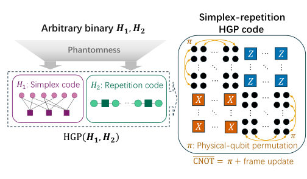
<figcaption class="paper-figure-caption"><b>Fig 1.</b> FIG. 1. Schematic illustration of the simplex–repetition HGP phan- tom code. The gray funnel represents the classification result. Up to natural equivalences, the phantom condition selects the simplex– repetition family among binary CSS HGP constructions. The two classical seed codes H1, H2 are the simplex code and the repetition code. Their hypergraph product gives the corresponding HGP phan- tom code. Black dots denote physical qubits, while orange and blue squares denote X- and Z-checks, respectively. Orange arrows depict a physical qubit permutation π. For each ordered in-block logical CNOT, an appropriate permutation π and a Pauli-frame update real- ize the logical operation.</figcaption>
</figure>
<figure class="paper-figure-card">
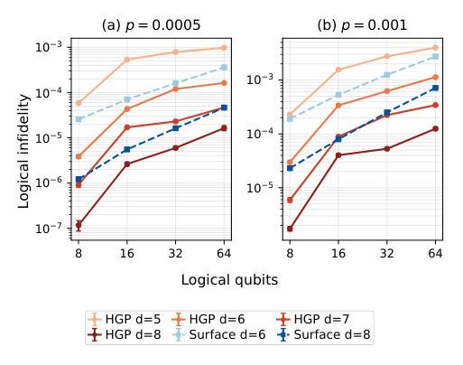
<figcaption class="paper-figure-caption"><b>Fig 2.</b> FIG. 2. Logical GHZ-state preparation with the simplex–repetition HGP phantom family. Left: p = 5 × 10−4. Right: p = 10−3. For each K-qubit GHZ target, HGP data use K/4 four-logical-qubit phantom blocks, whereas the surface-code baseline uses K rotated surface-code blocks. HGP distances are d = 5, 6, 7, 8, and surface- code baselines use d = 6, 8. The HGP implementation absorbs in-block CNOTs into phantom relabellings, leaving only transver- sal inter-block CNOT layers followed by QEC cycles.</figcaption>
</figure>
<figure class="paper-figure-card">
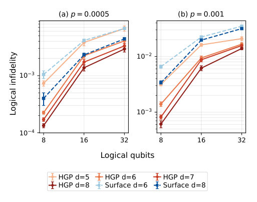
<figcaption class="paper-figure-caption"><b>Fig 3.</b> FIG. 3. Trotterized many-body benchmark. Left: p = 5 × 10−4. Right: p = 10−3. The HGP and surface-code configurations match those of the GHZ benchmark: K/4 four-logical-qubit HGP phantom blocks are compared with K rotated surface-code blocks, using HGP distances d = 5, 6, 7, 8 and surface-code distances d = 6, 8.</figcaption>
</figure>
</div>

<p><strong>Summary.</strong> This paper theoretically classifies Hypergraph Product (HGP) codes that minimize overhead during logical entanglement gate implementation by requiring the use of physical qubit permutations. The unique resulting family is then rigorously benchmarked against surface codes in simulating complex quantum circuits, demonstrating concrete performance advantages for low-overhead fault tolerance on hardware like neutral-atom arrays.</p>
<p><strong>Why it may be interesting.</strong> The direct comparison with neutral-atom arrays as a natural hardware setting, which supports nonlocal qLDPC operations while enabling the required local CNOTs via permutations, makes this highly relevant for experimental AMO physicists working on scalable quantum computation.</p>
<details>
<summary>Detailed structure</summary>
<p><strong>Main problem.</strong> The primary goal is reducing physical spacetime overhead in fault-tolerant quantum computation by finding efficient ways to implement logical entangling gates.</p>
<p><strong>Main result.</strong> The authors prove that the only Hypergraph Product (HGP) codes satisfying the 'phantom' condition are derived from a simplex code and a repetition code, which outperform surface codes in benchmark simulations.</p>
<p><strong>Method.</strong> The work combines theoretical classification of CSS HGP codes based on permutation automorphisms with extensive circuit-level benchmarking using Monte Carlo simulations for GHZ state preparation and many-body simulation.</p>
<p><strong>Model / system.</strong> The study focuses on Quantum Error Correction (QEC) using binary CSS Hypergraph Product (HGP) codes, specifically the simplex–repetition family. These codes are evaluated in the context of implementing logical CNOT gates via physical qubit permutations.</p>
<p><strong>Key observables.</strong> Logical infidelity ($1 - F$), which measures the average mismatch probability per target logical observable; code parameters like distance ($d$) and number of qubits ($n$).</p>
<p><strong>Important parameters / regimes.</strong> Physical error rates ($p = 10^{-3}, 5 	imes 10^{-4}$); system sizes (up to $K=64$ logical qubits).</p>
<p><strong>Assumptions / limitations.</strong> The analysis assumes the physical realization of the HGP structure and uses a specific noise model for circuit simulations; it also notes that the results are up to natural equivalences.</p>
<p><strong>Figures summary.</strong> Figures compare logical GHZ-state preparation fidelity and Trotterized many-body simulation fidelity between the proposed HGP code and rotated surface codes, showing consistent outperformance of the HGP code.</p>
<p><strong>Paper structure.</strong> The paper first theoretically classifies the unique structure of phantom CSS HGP codes (Theorem 2), then derives the specific simplex–repetition family using weight analysis (Theorem 3), and finally validates this family by benchmarking its performance against surface codes in two distinct quantum simulation tasks.</p>
</details>
<details>
<summary>Abstract</summary>
<p>Logical entangling gates are a major source of physical spacetime overhead in fault-tolerant quantum computation. Phantom codes reduce this cost by implementing every ordered in-block logical CNOT through physical qubit permutations and Pauli-frame updates. Whether this mechanism can coexist with the low-weight stabilizer structure of qLDPC codes is a central question for low-overhead fault-tolerant architectures. We give a deterministic answer within binary CSS hypergraph product (HGP) codes. Up to natural equivalences, the simplex-repetition family is the unique HGP family satisfying the phantom condition. We then evaluate this family under circuit-level noise in logical GHZ-state preparation and Trotterized many-body quantum simulation. The codes retain low-weight stabilizer checks and yield concrete advantages over rotated surface-code baselines in both benchmarks. Reconfigurable neutral-atom arrays offer a natural setting for this approach, supporting nonlocal qLDPC operations while enabling in-block logical CNOTs without additional physical operations. Together, these results make precise how permutation-based logical entangling constrains code design within the HGP framework, demonstrate the circuit-level benefits of the unique family, and guide the search for phantom qLDPC families with better asymptotic parameters for low-overhead fault tolerance on neutral-atom hardware.</p>
</details>
<p><sub><a href="#top">↑ back to top</a></sub></p>

<p><a id="paper-2607.12966"></a></p>
<h3 id="nonreciprocal-quantum-mpemba-effect"><a href="http://arxiv.org/abs/2607.12966v1">Nonreciprocal Quantum Mpemba Effect</a></h3>
<p><strong>Authors:</strong> Wei-Bin Yan, Ying-Jie Zhang, Yun-Jie Xia, Heng Fan, Zhong-Xiao Man<br>
<strong>Type:</strong> theory · <strong>Category:</strong> other · <strong>PDF:</strong> <a href="https://arxiv.org/pdf/2607.12966v1">https://arxiv.org/pdf/2607.12966v1</a><br>
<strong>Analysis basis:</strong> full PDF text, analyzed in chunks
<strong>Topic relevance:</strong> <code>correlated / nonlocal dissipation</code> <strong>3/5</strong> · <code>driven-dissipative phase transition</code> <strong>3/5</strong> · <code>methods for driven-dissipative</code> <strong>3/5</strong> · <code>non-equilibrium dynamics</code> <strong>3/5</strong> · <code>Keldysh / 2PI / non-Gaussian methods</code> <strong>2/5</strong> · <code>non-equilibrium universality</code> <strong>2/5</strong> · <code>analog quantum simulation</code> <strong>1/5</strong> · <code>scars &amp; prethermalization</code> <strong>1/5</strong></p>
<div class="figure-strip-hint">↔ Scroll figures horizontally</div>
<div class="paper-figures-scroll">
<figure class="paper-figure-card">
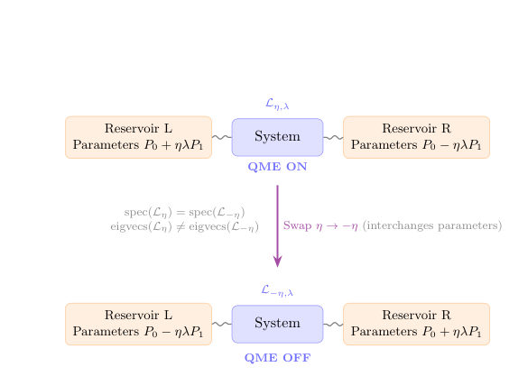
<figcaption class="paper-figure-caption"><b>Fig 1.</b> FIG. 1. Schematic of the nonreciprocal quantum Mpemba effect. Two reservoirs with parameters P0 ± ηλP1 couple to the system. The swap η →−η interchanges their parameters, turning the quantum Mpemba effect on and off for the same initial state.</figcaption>
</figure>
<figure class="paper-figure-card">
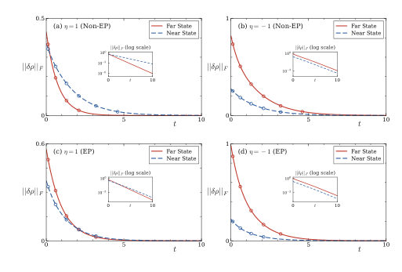
<figcaption class="paper-figure-caption"><b>Fig 2.</b> FIG. 2. (color online) The time evolution of the Frobenius- norm distance to the steady state. Solid and dashed lines show the evolution computed from the 2 × 2 effective model Leff. Open circles show the evolution from the full 9 × 9 superoperator Lη,λ with γϕ = 5. Each panel includes a logarithmic-scale inset. (a) and (b) show the forward di- rection (η = 1) and reversed direction (η = −1), respec- tively, in the non-EP regime. (c) and (d) show the for- ward and reversed directions, respectively, at the EP. Pa- rameters are λ = 0.2, bf = γ0 = 1, f0 = 0.38 for non- EP regime, f0 = 0.2 at EP. Initial states, represented in the |0⟩, |L⟩, |R⟩basis, are ρfar = diag(0.0385, 0.7533, 0.2082),...</figcaption>
</figure>
</div>

<p><strong>Summary.</strong> The paper theoretically demonstrates the Nonreciprocal Quantum Mpemba Effect (NQME) in open quantum systems coupled to biased reservoirs. By analyzing how swapping reservoir parameters affects the system's dynamics, the authors show that directional asymmetry can induce anomalous relaxation speedups without altering the underlying energy spectrum. This mechanism is crucial for understanding controlled dissipation and non-Hermitian physics.</p>
<p><strong>Why it may be interesting.</strong> This work provides a rigorous theoretical framework for understanding how directional biases (nonreciprocity) can induce anomalous relaxation phenomena like the Mpemba effect in quantum systems, which is highly relevant for designing quantum thermal machines or controlling decoherence rates.</p>
<details>
<summary>Detailed structure</summary>
<p><strong>Main problem.</strong> The paper demonstrates a nonreciprocal quantum Mpemba effect (NQME) by analyzing how reservoir bias asymmetry affects anomalous relaxation dynamics in open quantum systems.</p>
<p><strong>Main result.</strong> The NQME is proven to exist when the system's evolution exhibits directional asymmetry under parameter swapping, even though the underlying spectrum remains invariant due to structural symmetries.</p>
<p><strong>Method.</strong> The analysis employs perturbation theory (Feshbach projection method) to derive an effective Liouvillian superoperator for the slow subspace dynamics. The nonreciprocity is diagnosed by comparing decoupling conditions ($\chi \cdot a = 0$) under swapped reservoir parameters.</p>
<p><strong>Model / system.</strong> The system consists of an open quantum system coupled to two isomorphic, biased reservoirs (Left and Right). Dynamics are governed by the Lindblad master equation, analyzed in regimes where spectral gaps allow for effective low-dimensional modeling.</p>
<p><strong>Key observables.</strong> The slow component of the deviation from steady state ($\delta
ho_{	ext{slow}}(t)$), the decoupling vector $\chi$, and the relaxation rate asymmetry (speedup ratio $R$).</p>
<p><strong>Important parameters / regimes.</strong> Perturbation strength $\lambda$ and direction parameter $\eta \in (-1, 1)$; the spectral gap $\Delta$; and operating at a Liouvillian exceptional point (EP).</p>
<p><strong>Assumptions / limitations.</strong> The analysis assumes the existence of a substantial spectral gap ($\Delta$) to separate slow and fast modes, allowing for first-order perturbation theory approximations in $\eta\lambda$.</p>
<p><strong>Figures summary.</strong> Figure 1 schematically illustrates how swapping reservoir parameters turns the QME ON or OFF. Figure 2 shows time evolution confirming NQME by comparing decay rates under forward ($\eta=1$) versus reverse ($\eta=-1$) bias.</p>
<p><strong>Paper structure.</strong> The paper first establishes the general framework using the Lindblad master equation and introduces the swap operation. It then uses perturbation theory to derive an effective low-dimensional generator, proving that nonreciprocity is carried entirely by eigenvector rotation while eigenvalues are pinned. Finally, it applies this analysis to demonstrate NQME in both generic and exceptional point regimes.</p>
</details>
<details>
<summary>Abstract</summary>
<p>We demonstrate a nonreciprocal quantum Mpemba effect. Consider a broad class of open quantum systems, each coupled to two isomorphic reservoirs through symmetric ports. Interchanging the parameters of the two reservoirs -- a discrete operation we call the swap -- turns the quantum Mpemba effect on or off without changing the initial states. The swap modifies the Liouvillian, yet a structural symmetry pins the eigenvalues while rotating only the eigenvectors. The nonreciprocity therefore leaves no trace in the spectrum and is carried entirely by the eigenvectors. Concretely, the swap alters the far state's projection onto the slowest mode, switching whether it bypasses the slowest relaxation channel. At a Liouvillian exceptional point, the far state's relaxation switches from bypassing the slowest mode to avoiding the critical slowing, with the on--off contrast intact. There the spectrum-independent mechanism takes its purest form.</p>
</details>
<p><sub><a href="#top">↑ back to top</a></sub></p>

<p><a id="paper-2607.12093"></a></p>
<h3 id="harvesting-reshapes-dynamical-populations"><a href="http://arxiv.org/abs/2607.12093v1">Harvesting Reshapes Dynamical Populations</a></h3>
<p><strong>Authors:</strong> R. K. Singh, Michael Assaf, Jason R. Green, Erez Aghion<br>
<strong>Type:</strong> theory · <strong>Category:</strong> statistical mechanics · <strong>PDF:</strong> <a href="https://arxiv.org/pdf/2607.12093v1">https://arxiv.org/pdf/2607.12093v1</a><br>
<strong>Analysis basis:</strong> full PDF text, analyzed in chunks
<strong>Topic relevance:</strong> <code>methods for driven-dissipative</code> <strong>3/5</strong> · <code>non-equilibrium dynamics</code> <strong>3/5</strong> · <code>non-equilibrium universality</code> <strong>3/5</strong> · <code>Keldysh / 2PI / non-Gaussian methods</code> <strong>2/5</strong> · <code>driven-dissipative phase transition</code> <strong>2/5</strong> · <code>Frenkel-Kontorova</code> <strong>1/5</strong> · <code>analog quantum simulation</code> <strong>1/5</strong> · <code>correlated / nonlocal dissipation</code> <strong>1/5</strong> · <code>quantum measurements</code> <strong>1/5</strong></p>
<div class="figure-strip-hint">↔ Scroll figures horizontally</div>
<div class="paper-figures-scroll">
<figure class="paper-figure-card">
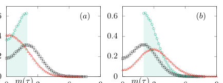
<figcaption class="paper-figure-caption"><b>Fig 1.</b> FIG. 1. Position probability density ρ(x, t) of Brownian particles before and after a harvest at t = τ. Particles are initially localized at x = 2. Without harvesting, ρ(x, t) spreads diffusively with a re- flecting boundary at x = 0. Black squares show the density at the instant right before the harvesting, at time τ. Here, the diffusion coefficient is D = 1, τ = 1. Green circles show the density im- mediately after reshaping, at τ +. Red triangles show the density after an additional interval τ. (a) Backward reshaping: clipping the density above the median m(τ) and renormalizing below it hinders the subsequent spreading of the density. (b) Forward re- shaping: removing density below m(τ)...</figcaption>
</figure>
<figure class="paper-figure-card">
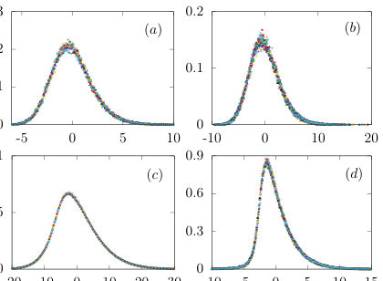
<figcaption class="paper-figure-caption"><b>Fig 2.</b> FIG. 3. Generality of forward-reshaping: from sub- to superdif- fusion. Position distribution ρ(x, nτ) shifted by the mean ⟨x(nτ)⟩ prior to reshaping events for the case when the distribution is re- shaped forward with respect to the median for different random walks starting at x(0) = 1 and subject to a reflecting wall at x = 0. The independent random walks are: (a) Brownian mo- tion, (b) superdiffusive run-and-tumble dynamics, (c) subdiffusive continuous-time random walks, and (d) superdiffusive L´evy walks. (see Appendix A and B for details).</figcaption>
</figure>
<figure class="paper-figure-card">
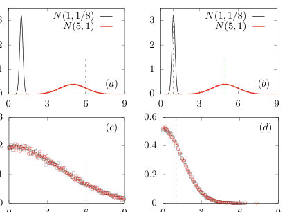
<figcaption class="paper-figure-caption"><b>Fig 3.</b> FIG. 5. The quasi-steady state in backward reshaping. Panels (a,b): The initial spatial density of Brownian particles, prior to backward reshaping with respect to (a) a fixed location at a = 6 and (b) the median. The initial Gaussian density in black has unit mean and variance 1/8, and the mean and variance for the red density are 5 and 1. The reshaping thresholds in each panel are marked with dashed lines. In (a) there is a single reshaping threshold, while in (b) the threshold differs between the two initial densities. In panels (c,d) shown is the distribution of the Brownian particle just before the fifth reshaping event, for reshaping with respect to a fixed threshold (c) (similar to...</figcaption>
</figure>
<figure class="paper-figure-card">
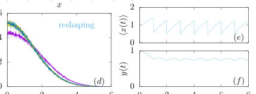
<figcaption class="paper-figure-caption"><b>Fig 4.</b> FIG. 4. Harvesting in a predator-prey system. (a,b) Temporal evolution of an unharvested population of predators; ρ(x, t) and its mean ⟨x(t)⟩, and (c) its effect of the population of the prey y(t). (d-e) Distribution of predator sizes under consecutive reshapings at time intervals of duration τ, and its affect on the corresponding mean predator size. (f) The effect of the predator density reshap- ing, on the prey population. Initially, x(0) = 1 and y(0) = 1, and the evolution is according to Eq. (10). The simulation parameters are: τ = 1, σ = 1, b = 0.911, see Appendix A and B.</figcaption>
</figure>
</div>

<p><strong>Summary.</strong> This work analyzes how periodically removing individuals from a stochastic population based on their trait value (harvesting) fundamentally reshapes the system's probability density. It demonstrates that this external selection process forces the system toward predictable, universal quasi-steady states or imparts constant directional drifts. This suggests a mechanism for actively manipulating complex non-equilibrium dynamics.</p>
<p><strong>Why it may be interesting.</strong> While focused on classical population dynamics, the concept of external selection interventions leading to predictable steady states mirrors non-equilibrium steady state physics relevant in open quantum systems or driven many-body models.</p>
<details>
<summary>Detailed structure</summary>
<p><strong>Main problem.</strong> The study investigates how periodic removal (harvesting) of individuals above or below a trait threshold reshapes the probability density of heterogeneous populations without altering their underlying stochastic dynamics.</p>
<p><strong>Main result.</strong> Backward reshaping drives the system to a universal quasi-steady state dependent only on the harvesting frequency and threshold, while forward reshaping generates a constant effective drift exceeding unharvested rates.</p>
<p><strong>Method.</strong> The authors use mathematical derivations based on instantaneous density clipping (reshaping) applied to solutions of stochastic processes like Brownian motion, CTRW, and Lévy walks.</p>
<p><strong>Model / system.</strong> The model involves tracking the probability density $\rho(x, t)$ of a population whose trait value $x$ is governed by various anomalous diffusion processes on $[0, \infty)$.</p>
<p><strong>Key observables.</strong> The shape of the probability density function $\rho(x, n\tau)$ after multiple reshaping events; the evolution of the median position $m(\tau)$; and the effective drift rate.</p>
<p><strong>Important parameters / regimes.</strong> Harvesting threshold ($x_c$), harvesting frequency ($\tau$), and process parameters defining diffusion (e.g., anomalous exponents $\alpha$).</p>
<p><strong>Assumptions / limitations.</strong> The reshaping removal is treated as an instantaneous event, and convergence arguments assume that initial condition effects vanish after sufficient repetitions.</p>
<p><strong>Figures summary.</strong> Figures illustrate the density evolution for various random walks (Brownian, CTRW, Lévy) showing convergence to a fixed shape under backward reshaping, alongside median tracking plots.</p>
<p><strong>Paper structure.</strong> The paper develops theory by first defining the mathematical framework of stochastic reshaping, then deriving analytical results for specific processes (like Brownian motion), and finally generalizing these findings to anomalous diffusion types using asymptotic arguments.</p>
</details>
<details>
<summary>Abstract</summary>
<p>Harvesting -- the periodic removal of individuals above or below a threshold trait value -- reshapes heterogeneous populations without altering their underlying stochastic dynamics. We study how repeated harvesting events steer the evolution of probability densities for classes of stochastic processes exhibiting both normal and anomalous dynamics, as well as a prototypical predator-prey model. Removal of the upper portion of the density drives the system to a quasi-steady state when viewed at the ``harvesting clock''. This state depends only on the harvesting threshold and frequency but not on the initial conditions. Removal of the lower portion of the density fixes its shape while generating a constant effective drift that exceeds that of the unharvested mean. Our results suggest the possibility of manipulating the dynamics of stochastic populations through external selection interventions.</p>
</details>
<p><sub><a href="#top">↑ back to top</a></sub></p>

<p><a id="paper-2607.12022"></a></p>
<h3 id="strong-to-weak-spontaneous-symmetry-breaking-from-wormholes-in-holography"><a href="http://arxiv.org/abs/2607.12022v1">Strong-to-Weak Spontaneous Symmetry Breaking from Wormholes in Holography</a></h3>
<p><strong>Authors:</strong> Taishi Kawamoto, Kenya Tasuki, Masahito Yamazaki<br>
<strong>Type:</strong> theory · <strong>Category:</strong> statistical mechanics · <strong>PDF:</strong> <a href="https://arxiv.org/pdf/2607.12022v1">https://arxiv.org/pdf/2607.12022v1</a><br>
<strong>Analysis basis:</strong> full PDF text, analyzed in chunks
<strong>Topic relevance:</strong> <code>Keldysh / 2PI / non-Gaussian methods</code> <strong>3/5</strong> · <code>entanglement &amp; information structure</code> <strong>3/5</strong> · <code>correlated / nonlocal dissipation</code> <strong>2/5</strong> · <code>driven-dissipative phase transition</code> <strong>2/5</strong> · <code>methods for driven-dissipative</code> <strong>2/5</strong> · <code>non-equilibrium dynamics</code> <strong>2/5</strong> · <code>correlated cavity matter</code> <strong>1/5</strong> · <code>non-equilibrium universality</code> <strong>1/5</strong></p>
<div class="figure-strip-hint">↔ Scroll figures horizontally</div>
<div class="paper-figures-scroll">
<figure class="paper-figure-card">
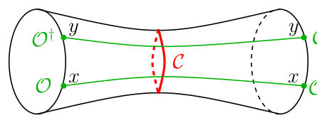
<figcaption class="paper-figure-caption"><b>Fig 1.</b> FIG. 1. We represent four boundary local operators O, O†</figcaption>
</figure>
<figure class="paper-figure-card">
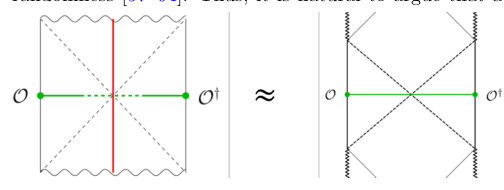
<figcaption class="paper-figure-caption"><b>Fig 2.</b> FIG. 3. The bulk geometry with a defect will be approximated by the charged black hole solution. The latter does not have any obstacles for charged fields to communicate.</figcaption>
</figure>
</div>

<p><strong>Summary.</strong> This paper explores Strong-to-Weak Spontaneous Symmetry Breaking (SWSSB) using holographic models dual to black hole physics. By calculating specific correlation functions like the Rényi-2 correlator, the authors demonstrate that SWSSB occurs when comparing different thermal ensembles. This leads to a novel Swampland conjecture connecting symmetry breaking to fundamental constraints in quantum gravity theories.</p>
<p><strong>Why it may be interesting.</strong> While deeply rooted in quantum gravity/holography, the core concept—symmetry breaking diagnosed via correlation functions in mixed states—is highly relevant to non-equilibrium statistical mechanics and open quantum systems dynamics.</p>
<details>
<summary>Detailed structure</summary>
<p><strong>Main problem.</strong> The study investigates Strong-to-Weak Spontaneous Symmetry Breaking (SWSSB) at finite temperature within the framework of holography.</p>
<p><strong>Main result.</strong> Non-zero Rényi-2 and Wightman correlators in the large distance limit demonstrate SWSSB, which is linked to the emergence of weak symmetries via ensemble averaging. The authors propose a new Swampland conjecture regarding this phenomenon in quantum gravity.</p>
<p><strong>Method.</strong> The analysis employs holographic methods using the AdS/CFT correspondence, calculating correlation functions (Rényi-2 and Wightman) by implementing projection operators through twisted boundary conditions on bulk fields.</p>
<p><strong>Model / system.</strong> The model involves a 2D CFT dual to an Einstein-Chern-Simons theory coupled with probe matter in the bulk geometry of a BTZ black hole, analyzed at finite temperature.</p>
<p><strong>Key observables.</strong> Rényi-2 correlator ($R^{(2)}$) and Wightman correlator ($C_W$), which are used to diagnose the presence or absence of symmetry breaking.</p>
<p><strong>Important parameters / regimes.</strong> Finite temperature ($eta=1/T$), large distance limit ($|x-y|	o\infty$), and the chemical potential $\mu$ associated with charge conservation.</p>
<p><strong>Assumptions / limitations.</strong> The analysis relies on large-$N$ factorization, specific limiting procedures for correlation functions, and the assumption that SWSSB is diagnosed by these correlators.</p>
<p><strong>Figures summary.</strong> Figures illustrate the non-contractible cycle wrapping the BTZ horizon and show how different field types (neutral vs. charged) interact with boundaries in the bulk geometry.</p>
<p><strong>Paper structure.</strong> The paper progresses from defining SWSSB and setting up the holographic model, calculating correlation functions using twisted boundary conditions, demonstrating the non-zero nature of $R^{(2)}$ and $C_W$, and concluding by formulating a Swampland conjecture based on these findings.</p>
</details>
<details>
<summary>Abstract</summary>
<p>We study strong-to-weak spontaneous symmetry breaking (SWSSB) at finite temperature and its implications in holography. SWSSB is a novel critical phenomenon that arises only in mixed states. We demonstrate SWSSB with the BTZ black hole and show that, in the bulk, it is realized through wormhole geometries connecting the two copies in the thermofield-double construction. We point out that SWSSB can be recast as an emergence of global symmetries under ensemble averaging. We further examine the interplay between SWSSB and the swampland program, and propose a new swampland conjecture for quantum-gravity theories involving ensemble averages.</p>
</details>
<p><sub><a href="#top">↑ back to top</a></sub></p>

<p><a id="paper-2607.12585"></a></p>
<h3 id="from-phase-space-to-krylov-space-one-shell-at-a-time"><a href="http://arxiv.org/abs/2607.12585v1">From phase space to Krylov space, one shell at a time</a></h3>
<p><strong>Authors:</strong> Nicolas De Ro, Adrián Sánchez-Garrido, Julian Sonner<br>
<strong>Type:</strong> theory · <strong>Category:</strong> statistical mechanics · <strong>PDF:</strong> <a href="https://arxiv.org/pdf/2607.12585v1">https://arxiv.org/pdf/2607.12585v1</a><br>
<strong>Analysis basis:</strong> full PDF text, analyzed in chunks
<strong>Topic relevance:</strong> <code>entanglement &amp; information structure</code> <strong>3/5</strong> · <code>non-equilibrium dynamics</code> <strong>3/5</strong> · <code>non-equilibrium universality</code> <strong>2/5</strong> · <code>Keldysh / 2PI / non-Gaussian methods</code> <strong>1/5</strong> · <code>analog quantum simulation</code> <strong>1/5</strong> · <code>correlated / nonlocal dissipation</code> <strong>1/5</strong> · <code>driven-dissipative phase transition</code> <strong>1/5</strong> · <code>exotic spin models in light-matter</code> <strong>1/5</strong> · <code>methods for driven-dissipative</code> <strong>1/5</strong> · <code>scars &amp; prethermalization</code> <strong>1/5</strong></p>
<div class="figure-strip-hint">↔ Scroll figures horizontally</div>
<div class="paper-figures-scroll">
<figure class="paper-figure-card">
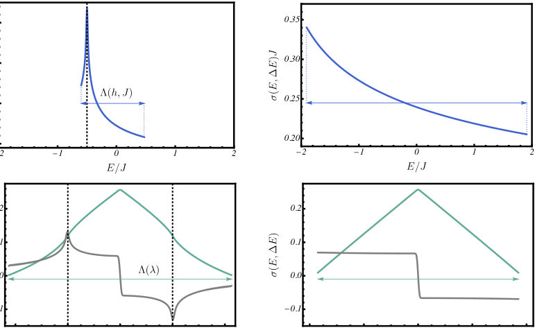
<figcaption class="paper-figure-caption"><b>Fig 1.</b> Figure 1: Normalized DOS for the full spectrum of the LMG and FP Hamiltonians, defined in Eqs. (2.1) and (2.2), respectively, obtained by exact diagonalization and smoothed using kernel density estimation. The DOS within individual symmetry sectors is qualitatively identical to that of the full spectrum. Varying the model parameters modifies the spectral bandwidth Λ of the corresponding Hamiltonian. (Upper row) LMG model (S = 7500) with (left) h = 1/2, J = 1 and (right) h = 2, J = 1. The vertical dashed line indicates the critical energy at E = −h. (Lower row) FP model (L = 60) with (left) λ = 0 and (right) λ = 0.9. The gray curves denote the derivative of the DOS with respect to the energy...</figcaption>
</figure>
<figure class="paper-figure-card">
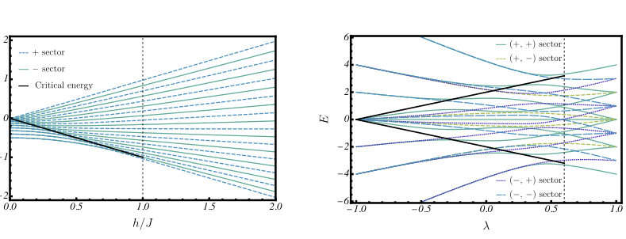
<figcaption class="paper-figure-caption"><b>Fig 2.</b> Figure 2: Energy spectra of the LMG and FP models. Colors indicate the symmetry sector of each eigenstate. Solid black lines mark the ESQPT critical energies, while vertical dashed lines indicate the ground-state QPT. (Left) LMG Hamiltonian (2.1) (S = 10) as a function of h/J (J = 1). For h &lt; J, the spectrum exhibits quasi-degenerate pairs below the critical energy E = −h (not resolvable at this scale). These quasi-degeneracies are lifted for h &gt; J. (Right) FP Hamiltonian (2.2) (L = 3) as a function of λ. The spectrum is shown in all four symmetry sectors, although only those associated with the ˆU1 symmetry are relevant for detecting quasi-degeneracies, which are found within the region...</figcaption>
</figure>
<figure class="paper-figure-card">
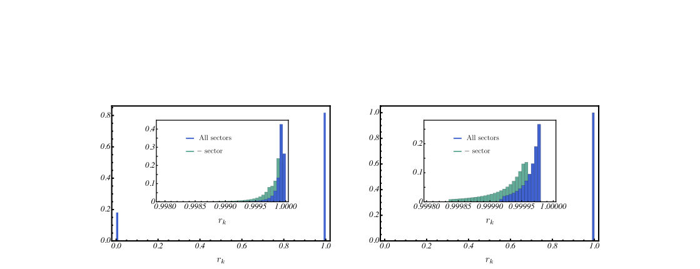
<figcaption class="paper-figure-caption"><b>Fig 3.</b> Figure 3: Distribution of the ratio of consecutive level spacings rk for the full spectrum of the LMG Hamiltonian (2.1) (S = 7500) with parameters (left) h = 1/2, J = 1 and (right) h = 2, J = 1. For h &lt; J, quasi-degenerate pairs from different symmetry sectors produce a peak near rk = 0 in the full-spectrum statistics. For h &gt; J, quasi-degeneracies are absent and the values of rk cluster near 1. The insets show a magnified view of the distribution near rk = 1 for the full spectrum and for a single symmetry sector (the two sectors overlap). Note the different horizontal scales between the two panels. In all cases, the mean ratio ⟨r⟩remains close to 1.</figcaption>
</figure>
<figure class="paper-figure-card">
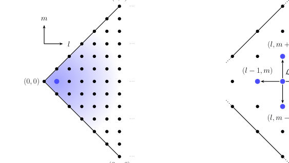
<figcaption class="paper-figure-caption"><b>Fig 4.</b> Figure 5: (Left) Grid of nodes (l, m) with cutoff l⋆= 6. The initial function is |Y 0 1 ), corresponding (up to normalization) to the spin component z, and having support on the node (1, 0) (more general initial conditions may have support on multiple nodes). Black nodes correspond to zero coefficients. As the Lanczos algorithm is iterated, the support spreads across the lattice, generating increasingly complicated functions. (Right) Action of the classical Liouvillian operator associated with the LMG Hamiltonian (see Eq. (3.35) below) on a spherical harmonic Y m l illustrating the induced transitions across the grid.</figcaption>
</figure>
<figure class="paper-figure-card">
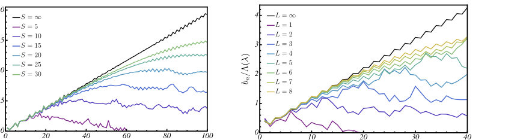
<figcaption class="paper-figure-caption"><b>Fig 5.</b> Figure 6: Classical Lanczos coefficients (black curves) shown versus quantum Lanczos coefficients (colored curves) for various values of collective spin size. (Left) For the classical LMG model (3.34) and its quantum counterpart in Eq. (2.1), with h = J = 1. In the classical case, the initial function is |z), and in the quantum case, the initial operator is ˆsz. (Right) For the classical FP Hamiltonian (3.36) and its quantum counterpart in Eq. (2.2), with λ = 0. In the classical case, the initial (normalized) function is |x1z2), and in the quantum case, the initial operator is (the normalized version of) ˆlx ⊗ˆmz.</figcaption>
</figure>
</div>

<p><strong>Summary.</strong> This paper develops a classical analogue of Krylov complexity using phase space methods to study quantum chaos. By applying this framework to spin models like LMG, the authors show that microcanonical analysis resolves ambiguities in complexity measurements caused by saddle points or spectral instabilities. This provides a robust tool for characterizing early-time chaotic dynamics across different energy regimes.</p>
<p><strong>Why it may be interesting.</strong> It provides a powerful, mathematically rigorous tool (classicalization of K-complexity) to probe early-time chaotic dynamics in many-body systems without needing full quantum simulation, which is highly relevant for understanding thermalization and scrambling.</p>
<details>
<summary>Detailed structure</summary>
<p><strong>Main problem.</strong> The work develops a classical counterpart for Krylov complexity, allowing the study of quantum chaos measures using phase space techniques.</p>
<p><strong>Main result.</strong> Classical Krylov complexity accurately approximates quantum complexity at early times in semiclassical systems, and a microcanonical approach resolves ambiguities arising from dynamical instabilities like saddle points.</p>
<p><strong>Method.</strong> It employs the classical Lanczos algorithm in phase space, utilizing Poisson brackets for dynamics and phase-space integrals for the inner product, alongside an energy-resolved (microcanonical) analysis.</p>
<p><strong>Model / system.</strong> The study is applied to collective spin systems, specifically the Lipkin-Meshkov-Glick (LMG) and Feingold-Peres (FP) models, which are known to exhibit classical behavior in the thermodynamic limit.</p>
<p><strong>Key observables.</strong> Krylov complexity (K-complexity), Classical Krylov complexity, Krylov-Ehrenfest time ($t^*$), Microcanonical Krylov complexities.</p>
<p><strong>Important parameters / regimes.</strong> The semiclassical parameter $\hbar$, energy shell structure, and system coupling constants defining the LMG/FP models.</p>
<p><strong>Assumptions / limitations.</strong> The existence of a well-defined semiclassical limit ($\hbar 	o 0$) for the quantum mechanical systems under study.</p>
<p><strong>Figures summary.</strong> Figures illustrate the time evolution of microcanonical K-complexity for the LMG model, comparing regimes with and without saddle points in phase space.</p>
<p><strong>Paper structure.</strong> The paper first establishes the formal link between quantum and classical Krylov dynamics. It then introduces the energy-resolved (microcanonical) framework to analyze complexity growth in specific models like LMG and FP, resolving issues related to spectral chaos versus localized instabilities.</p>
</details>
<details>
<summary>Abstract</summary>
<p>In this work, we develop and study the classical Lanczos algorithm allowing us to define Krylov complexity using the symplectic structure of phase space: Poisson brackets take on the role of the quantum commutators and phase-space integrals furnish the inner product needed to define the Lanczos recursion. We show, using general methods of quantum mechanics in phase space, that the $\hbar \to 0$ limit of the usual quantum mechanical Krylov framework smoothly goes over into the classical one. In theories with well-defined semiclassical limits, we show that classical Krylov complexity accurately approximates quantum complexity at early enough times, and thus is a useful characteristic of early-time chaotic dynamics. We define a Krylov-Ehrenfest time, which quantifies the eventual divergence of classical and quantum complexities, corresponding to a characteristic depth of the Krylov chain, $n\sim n_*(\hbar)$, which in the time domain translates to the well-known scale, $t_*\simλ_K^{-1}\log(1/\hbar)$, in generic chaotic systems. We additionally define microcanonical Krylov complexities, both in the classical and quantum setting, which allows one a fine-grained study of complexity, energy shell by energy shell. We apply this framework to the Lipkin-Meshkov-Glick (LMG) and Feingold-Peres (FP) models, which are collective spin systems known to classicalize in the thermodynamic limit. In particular, while the FP model features spectral chaos for some range of coupling values, the LMG model is known to exhibit early-time saddle-dominated scrambling. Our analysis shows that the instability in LMG is resolved by the microcanonical Krylov complexity, which is controlled by the integrable structure of the Hamiltonian in spectral windows away from the instability, both at early and late times.</p>
</details>
<p><sub><a href="#top">↑ back to top</a></sub></p>

<p><a id="paper-2607.12045"></a></p>
<h3 id="bulk-and-microphase-separation-in-chiral-active-systems"><a href="http://arxiv.org/abs/2607.12045v1">Bulk and microphase separation in chiral active systems</a></h3>
<p><strong>Authors:</strong> Sumeja Bureković, S. J. Kole, Ananyo Maitra, Cesare Nardini<br>
<strong>Type:</strong> theory · <strong>Category:</strong> statistical mechanics · <strong>PDF:</strong> <a href="https://arxiv.org/pdf/2607.12045v1">https://arxiv.org/pdf/2607.12045v1</a><br>
<strong>Analysis basis:</strong> full PDF text, analyzed in chunks
<strong>Topic relevance:</strong> <code>Keldysh / 2PI / non-Gaussian methods</code> <strong>3/5</strong> · <code>driven-dissipative phase transition</code> <strong>3/5</strong> · <code>non-equilibrium dynamics</code> <strong>2/5</strong> · <code>non-equilibrium universality</code> <strong>2/5</strong> · <code>Frenkel-Kontorova</code> <strong>1/5</strong> · <code>analog quantum simulation</code> <strong>1/5</strong> · <code>correlated / nonlocal dissipation</code> <strong>1/5</strong> · <code>methods for driven-dissipative</code> <strong>1/5</strong></p>
<div class="figure-strip-hint">↔ Scroll figures horizontally</div>
<div class="paper-figures-scroll">
<figure class="paper-figure-card">
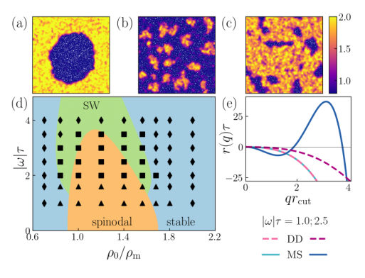
<figcaption class="paper-figure-caption"><b>Fig 1.</b> FIG. 1. Phase diagram of cQSAPs for translational diffusiv- ity DT = 0.3. a)–c): Steady-state configurations (L = 48rcut) with the color bar denoting the local density in units of ρm. d): Predictions of the linear stability from our MS theory: linearly stable (blue); SW instability (green); spinodal insta- bility (orange). Phases observed from simulations of cQS- APs: bulk phase separation (triangles); microphase separa- tion (squares); homogeneous phase (diamonds). e) Growth rate r for ρ0 = 0.84ρm and two values of |ω|τ, shown for both DD and MS coarse-graining theories (here, the MS growth rate for |ω|τ = 2.5 is multiplied by a factor 16). Other pa- rameters were set to v0 = 5, v1 = 1, ρm...</figcaption>
</figure>
<figure class="paper-figure-card">
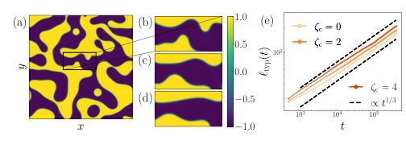
<figcaption class="paper-figure-caption"><b>Fig 2.</b> FIG. 2. Coarsening of cAMB at fixed global density ϕ0 = 0 for system size 1024 × 1024. (a) Snapshot of the density field for ζc = 4. (b-d) Time evolution of the interface showing propa- gating waves. (e) Characteristic length scale versus time for various ζc compatible with the diffusive ℓtyp ∼t1/3 coarsening law as analytically predicted.</figcaption>
</figure>
<figure class="paper-figure-card">
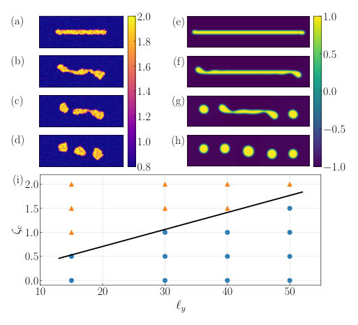
<figcaption class="paper-figure-caption"><b>Fig 3.</b> FIG. 3. Simulation snapshots illustrating droplet splitting in particle simulations of cQSAPs (Top left) and in cAMB (Top right), with time evolving from top to bottom. Bottom: numerical test of our criterion in Eq. (8) for droplet splitting (solid line, where csplit = 0.075 was obtained from fitting). Triangles indicate emergence of droplet splitting as observed in simulations, while circles its absence. The initial aspect ratio was fixed at Υ = 20. In particle simulations, the color encodes the local particle density in units of ρm. Parameters used: (Left) ω = 1.5, ρ0 = 38.4, Υ = 11 and system size 128rcut × 48rcut. (Right) ζc = 4.0, ℓy = 15, Υ = 31.25, and system size 512 × 128.</figcaption>
</figure>
</div>

<p><strong>Summary.</strong> This work analyzes how chirality affects phase separation in self-propelled active matter. Using sophisticated continuum models and multi-scale analysis, the authors distinguish between bulk and microphase separation regimes. The key finding is that chirality introduces novel dynamic features, such as interface traveling waves and droplet splitting, even when fluid flows are absent.</p>
<p><strong>Why it may be interesting.</strong> While focused on classical active matter, the use of advanced non-equilibrium statistical mechanics tools like multiple-scale expansion and linear stability analysis mirrors techniques used to study pattern formation and phase transitions in quantum many-body systems.</p>
<details>
<summary>Detailed structure</summary>
<p><strong>Main problem.</strong> The study investigates how chirality influences phase separation—specifically distinguishing between bulk and microphase regimes—in active particle systems driven by quorum-sensing interactions.</p>
<p><strong>Main result.</strong> Chirality is shown to induce traveling waves at the interface and can cause elongated droplets to split even without fluid flows, a phenomenon distinct from achiral systems.</p>
<p><strong>Method.</strong> The analysis employs both Diffusion-Drift (DD) approximation and advanced Multiple-Scales (MS) coarse-graining techniques applied to continuum models of active particles.</p>
<p><strong>Model / system.</strong> The system involves Chiral Quorum-Sensing Active Particles (cQSAPs) modeled by particle dynamics and a continuum description called chiral Active Model B (cAMB).</p>
<p><strong>Key observables.</strong> Phase separation types (bulk vs. microphase), coarsening law ($\ell_{typ} \propto t^{1/3}$), interfacial tensions, and the growth rate $r(q)$ from linear stability analysis.</p>
<p><strong>Important parameters / regimes.</strong> Chirality parameter ($\omega$), translational diffusivity ($DT$), and density ($
ho_0$).</p>
<p><strong>Assumptions / limitations.</strong> The DD approximation is insufficient, necessitating the use of MS theory for accurate prediction of microphase separation; the MS expansion itself has limitations near instability thresholds.</p>
<p><strong>Figures summary.</strong> Figures illustrate the phase diagram showing stability predictions (DD vs. MS), time evolution of coarsening ($\ell_{typ} \propto t^{1/3}$), and simulation snapshots demonstrating droplet splitting.</p>
<p><strong>Paper structure.</strong> The paper progresses from establishing the physical model (cQSAPs) to comparing theoretical approaches (DD vs. MS theory) for stability analysis, culminating in showing how chirality modifies dynamics like interface wave propagation and droplet breakup.</p>
</details>
<details>
<summary>Abstract</summary>
<p>Many active particles phase-separate due to quorum-sensing interactions, and their self-propulsion mechanisms often break chiral symmetry. Using particle and continuum models, we uncover the role of chirality in inducing bulk or microphase separation, including a chiral phase formed of vapor bubbles. Analytical predictions for the emergence of these phases require a coarse-graining technique based on multiple-scale analysis. Further, introducing a minimal active field theory, we show that, in the bulk phase separation regime, chirality does not alter the diffusive $t^{1/3}$ coarsening law nor the dynamical exponent associated with capillary waves, but induces traveling waves at the interface. We finally demonstrate that, even in the absence of fluid flows, chirality can cause the breakup of elongated droplets, resembling phenomena previously observed experimentally.</p>
</details>
<p><sub><a href="#top">↑ back to top</a></sub></p>

<p><a id="paper-2607.12727"></a></p>
<h3 id="emergence-of-drifted-diffusion-in-quantum-walks-with-subspace-restart"><a href="http://arxiv.org/abs/2607.12727v1">Emergence of drifted diffusion in quantum walks with subspace restart</a></h3>
<p><strong>Authors:</strong> Liwei Qiao, Ruoyu Yin, Wei Zhang<br>
<strong>Type:</strong> theory · <strong>Category:</strong> statistical mechanics · <strong>PDF:</strong> <a href="https://arxiv.org/pdf/2607.12727v1">https://arxiv.org/pdf/2607.12727v1</a><br>
<strong>Analysis basis:</strong> full PDF text, analyzed in chunks
<strong>Topic relevance:</strong> <code>driven-dissipative phase transition</code> <strong>3/5</strong> · <code>non-equilibrium dynamics</code> <strong>3/5</strong> · <code>analog quantum simulation</code> <strong>2/5</strong> · <code>non-equilibrium universality</code> <strong>2/5</strong> · <code>correlated / nonlocal dissipation</code> <strong>1/5</strong> · <code>measurement-induced transitions</code> <strong>1/5</strong> · <code>methods for driven-dissipative</code> <strong>1/5</strong> · <code>quantum measurements</code> <strong>1/5</strong></p>
<div class="figure-strip-hint">↔ Scroll figures horizontally</div>
<div class="paper-figures-scroll">
<figure class="paper-figure-card">
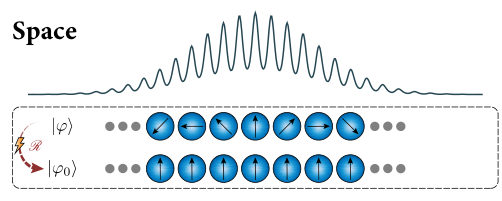
<figcaption class="paper-figure-caption"><b>Fig 1.</b> FIG. 1. Schematic of a discrete-time quantum walk with periodic subspace restart. (Top) Temporal evolution: unin- terrupted unitary dynamics ˆ W r are interleaved with instan- taneous coin resets R (dashed boxes). (Bottom) Action of R in real space: the spatial probability profile is left invariant, while the internal coin state at every lattice site (blue spheres) is reset from the evolved |φ⟩back to the initial |φ0⟩.</figcaption>
</figure>
<figure class="paper-figure-card">
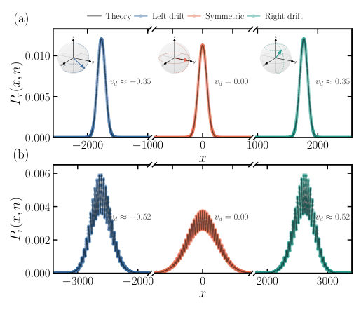
<figcaption class="paper-figure-caption"><b>Fig 2.</b> FIG. 2. Occupation probability Pr(x, n) at n = 5000 steps for restart periods (a) r = 1 and (b) r = 25, with three coin orientations (Bloch spheres): left drift (θ, ϕ) = (3π/4, 2π/3) (blue), symmetric spreading (π/2, π/2) (orange), and right drift (π/4, π/3) (green). At r = 1 the distribution is a clean Gaussian, while at r = 25 a Gaussian envelope persists but is dressed by short-range interference fringes, signaling that the macroscopic transport classicalizes while local quantum coherence survives within each cycle. Without specification, only lattice sites with nonzero probability are shown.</figcaption>
</figure>
<figure class="paper-figure-card">
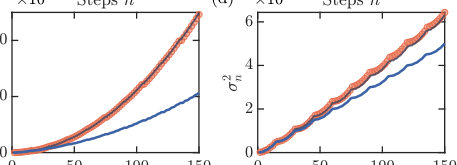
<figcaption class="paper-figure-caption"><b>Fig 3.</b> FIG. 3. Accumulation of statistical quantities versus steps n under subspace restart with period r = 15 and trunca- tion ∆max = 8. (a) Variance σ2 n for the symmetric coin (θ, ϕ) = (π/2, π/2). (b)–(d) Mean displacement µn, MSD ⟨x2(n)⟩and variance σ2 n for an asymmetric coin (θ, ϕ) = (0, 0). Orange circles represent exact numerical simulations, and the solid lines correspond to theory [Diagonal (blue), Truncation (black)]. The diagonal ansatz captures the linear-in-n scaling and the periodic staircase modulation, while the truncated re- construction with a small light-cone cutoff ∆max ≪2r closes the residual quantitative gap, confirming that macroscopic transport is governed by a classical...</figcaption>
</figure>
<figure class="paper-figure-card">
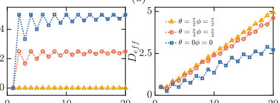
<figcaption class="paper-figure-caption"><b>Fig 4.</b> FIG. 4. Long-time effective transport coefficients versus restart period r, defined as vdeff = [µRr −µ(R−1)r]/r and Deff = [σ2 Rr −σ2 (R−1)r]/2r, for three coin states: (θ, ϕ) = (π/2, π/2) (yellow triangles), (π/3, π/2) (red circles), and (0, 0) (blue squares). At r = 1, the dynamics reduces to a clas- sical random walk; for r &gt; 1, vdeff saturates to coin-dependent values, while Deff grows linearly with r. Thus subspace restart engineers emergent drifted diffusion in DTQWs.</figcaption>
</figure>
</div>

<p><strong>Summary.</strong> The paper introduces 'subspace restart,' a novel periodic reset mechanism for quantum walks that selectively erases history while preserving spatial location. This process forces the walker's dynamics into a predictable drifted-diffusion regime, allowing researchers to engineer transport coefficients like drift and diffusivity with high control. It provides a powerful tool for studying and controlling the fundamental crossover from coherent quantum mechanics to classical diffusion.</p>
<p><strong>Why it may be interesting.</strong> This work provides a concrete, tunable protocol—subspace restart—to engineer macroscopic transport properties in quantum systems, offering an analogy to controlled decoherence or measurement-induced localization relevant to open quantum systems.</p>
<details>
<summary>Detailed structure</summary>
<p><strong>Main problem.</strong> The paper addresses how to control the transition from quantum wave-like transport to classical diffusive behavior in quantum walks.</p>
<p><strong>Main result.</strong> Subspace restart drives the quantum walk into an engineered drifted-diffusion regime, allowing precise tuning of both drift and diffusivity coefficients.</p>
<p><strong>Method.</strong> The analysis uses a source picture decomposition (Huygens-Fresnel mechanism) to separate the robust classical backbone from residual short-range quantum interference.</p>
<p><strong>Model / system.</strong> The model is a discrete-time quantum walk on an infinite 1D lattice, governed by periodic subspace restarts that reset only the internal coin degrees of freedom while preserving spatial probability.</p>
<p><strong>Key observables.</strong> Mean displacement (drift), Mean Squared Displacement ($\langle x^2(n) 
angle$), effective drift velocity ($v_{	ext{deff}}$), and diffusion coefficient ($D_{	ext{eff}}$).</p>
<p><strong>Important parameters / regimes.</strong> The restart period ($r$) acts as a tunable knob, controlling the degree of classicalization; the initial coin orientation sets the geometric bias.</p>
<p><strong>Assumptions / limitations.</strong> The analysis relies on approximations, particularly treating the incoherent sum of source intensities (diagonal approximation), which is valid in certain limits.</p>
<p><strong>Figures summary.</strong> Figures illustrate the probability distribution $P_r(x, n)$ for different restart periods ($r=1$ vs. $r=25$), showing a clean Gaussian core overlaid with short-range interference fringes, and plot the accumulation of statistical quantities like $\sigma_n^2$ over time steps.</p>
<p><strong>Paper structure.</strong> The paper introduces subspace restart as a mechanism to control quantum-to-classical crossover in DTQWs. It develops the source picture description, analyzes the asymptotic Gaussian behavior (incoherent sum), and derives explicit formulas for the effective drift and diffusion coefficients based on the restart period $r$.</p>
</details>
<details>
<summary>Abstract</summary>
<p>Restart of a quantum process is typically modeled as a global reinitialization that erases the system's entire history. Here we introduce subspace restart, a protocol that periodically resets only the internal degrees of freedom while preserving the spatial distribution, as a tunable knob for the quantum-to-classical crossover. Using the discrete-time quantum walk as an example, we show that this selective reset drives the walker into an engineered drifted-diffusion regime. This phenomenon can be understood by a Huygens-Fresnel mechanism, where each restart fragments the wave function into a set of independent secondary sources to screen long-range correlations and isolate a robust classical backbone, whose drift and diffusivity are set by the geometric orientation of the initial coin and the restart period. Residual quantum interference, confined to effective light cones, survives only as a short-range correction that renormalizes these coefficients and imprints periodic modulations on the cumulants. Our results establish subspace restart as a route to controlling the quantum-to-classical crossover in synthetic lattices.</p>
</details>
<p><sub><a href="#top">↑ back to top</a></sub></p>

<p><a id="paper-2607.12926"></a></p>
<h3 id="coherent-bose-einstein-condensation-with-fluctuating-density"><a href="http://arxiv.org/abs/2607.12926v1">Coherent Bose-Einstein condensation with fluctuating density</a></h3>
<p><strong>Authors:</strong> L. Salasnich, A. Crisanti, A. Sarracino, M. Zannetti<br>
<strong>Type:</strong> theory · <strong>Category:</strong> quantum gases · <strong>PDF:</strong> <a href="https://arxiv.org/pdf/2607.12926v1">https://arxiv.org/pdf/2607.12926v1</a><br>
<strong>Analysis basis:</strong> full PDF text, analyzed in chunks
<strong>Topic relevance:</strong> <code>analog quantum simulation</code> <strong>3/5</strong> · <code>correlated cavity matter</code> <strong>3/5</strong> · <code>quantum optics experiment</code> <strong>2/5</strong> · <code>Keldysh / 2PI / non-Gaussian methods</code> <strong>1/5</strong> · <code>Tavis-Cummings &amp; cavity-many-emitter</code> <strong>1/5</strong> · <code>driven-dissipative phase transition</code> <strong>1/5</strong> · <code>entanglement &amp; information structure</code> <strong>1/5</strong> · <code>methods for driven-dissipative</code> <strong>1/5</strong></p>
<div class="figure-strip-hint">↔ Scroll figures horizontally</div>
<div class="paper-figures-scroll">
<figure class="paper-figure-card">
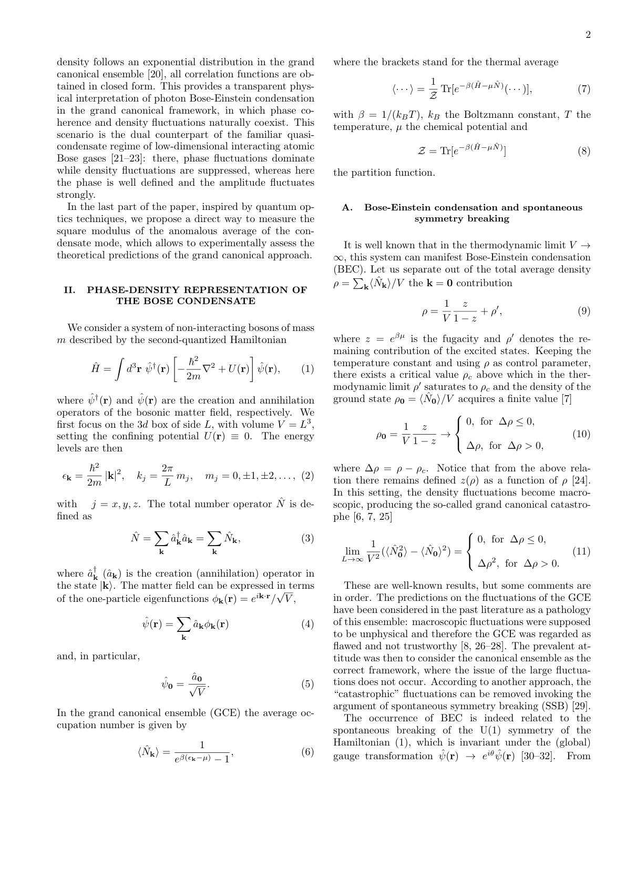
<figcaption class="paper-figure-caption"><b>Fig 1.</b> Low-resolution page preview, page 2</figcaption>
</figure>
<figure class="paper-figure-card">
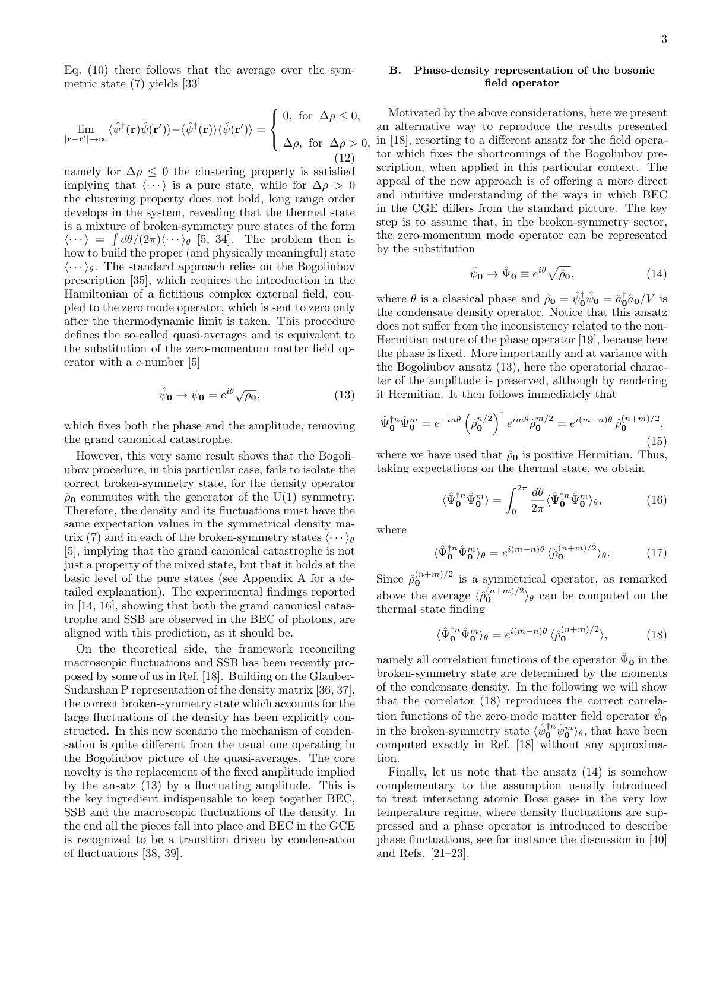
<figcaption class="paper-figure-caption"><b>Fig 2.</b> Low-resolution page preview, page 3</figcaption>
</figure>
<figure class="paper-figure-card">
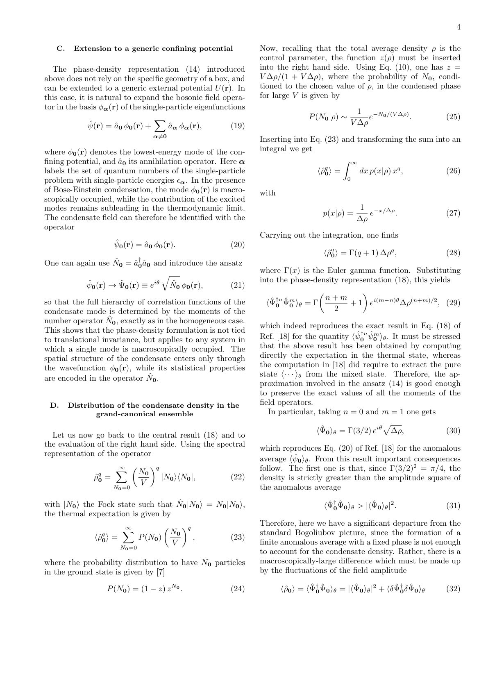
<figcaption class="paper-figure-caption"><b>Fig 3.</b> Low-resolution page preview, page 4</figcaption>
</figure>
<figure class="paper-figure-card">
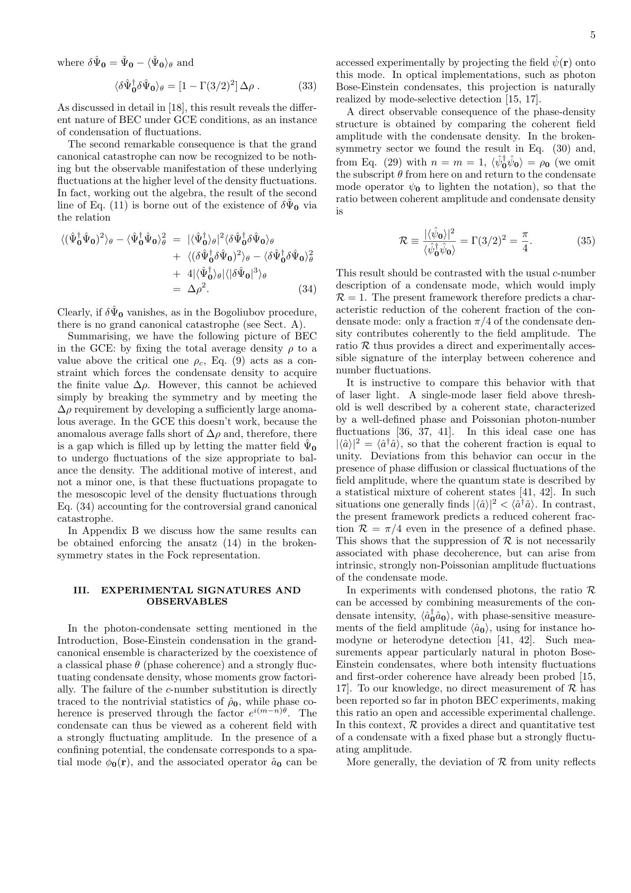
<figcaption class="paper-figure-caption"><b>Fig 4.</b> Low-resolution page preview, page 5</figcaption>
</figure>
<figure class="paper-figure-card">
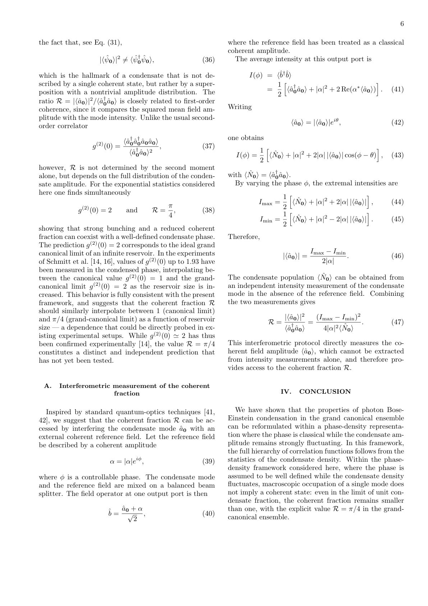
<figcaption class="paper-figure-caption"><b>Fig 5.</b> Low-resolution page preview, page 6</figcaption>
</figure>
</div>

<p><strong>Summary.</strong> This paper re-examines Bose-Einstein condensation in the Grand Canonical Ensemble, focusing on systems where condensate number fluctuations are macroscopic. By using a phase-density decomposition, the authors derive that the coherence observed is suppressed relative to the total density by a factor of $\pi/4$, providing a key theoretical signature for photon BECs.</p>
<p><strong>Why it may be interesting.</strong> This work provides a rigorous theoretical framework to reconcile phase coherence (suggested by $\langle \hat{\psi}_0 
angle$) with large number fluctuations ($
ho_0$), which is crucial for understanding real-world quantum optical experiments like photon BECs.</p>
<details>
<summary>Detailed structure</summary>
<p><strong>Main problem.</strong> The paper addresses Bose-Einstein condensation (BEC) in the Grand Canonical Ensemble (GCE) when macroscopic condensate number fluctuations are significant, challenging standard mean-field descriptions.</p>
<p><strong>Main result.</strong> For an ideal Bose gas in GCE, the ratio of the anomalous average squared to the total density is predicted to be $|\langle \hat{\psi}_0 
angle|^2 / 
ho_0 = \pi/4$, indicating that fluctuations contribute significantly beyond the simple mean-field prediction.</p>
<p><strong>Method.</strong> The authors employ a phase-density decomposition ($\hat{\psi}_0 
ightarrow e^{i	heta} \sqrt{
ho_0}$) and analyze correlation functions by determining their dependence solely on the statistics of the condensate density operator $\hat{
ho}_0$.</p>
<p><strong>Model / system.</strong> The system is an ideal gas of bosons, specifically applied to BEC in photon microcavities. The analysis focuses on the zero-momentum mode operator $\hat{\psi}_0$ and its associated density fluctuations.</p>
<p><strong>Key observables.</strong> Condensate density ($
ho_0$), anomalous average squared ($|\langle \hat{\psi}_0 
angle|^2$), and the ratio $R = |\langle \hat{\psi}_0 
angle|^2 / \langle \hat{\psi}^\dagger_0 \hat{\psi}_0 
angle$.</p>
<p><strong>Important parameters / regimes.</strong> The GCE limit, which leads to the characteristic prediction $R=\pi/4$, and the comparison between coherent (canonical) and fluctuating (grand canonical) regimes.</p>
<p><strong>Assumptions / limitations.</strong> The analysis assumes a well-defined phase ($ heta$) while allowing the condensate density ($
ho_0$) to fluctuate macroscopically, which is necessary because standard Bogoliubov approaches fail in this regime.</p>
<p><strong>Paper structure.</strong> The paper develops the theory by first establishing the phase-density decomposition, deriving how correlation functions depend only on density statistics. It then calculates specific ratios like $R$ for the ideal gas in GCE, contrasting these results with canonical and coherent state expectations.</p>
</details>
<details>
<summary>Abstract</summary>
<p>Bose-Einstein condensation in the grand canonical ensemble admits a formulation in terms of a phase-density decomposition of the condensate mode operator $\hatψ_{\bf 0}$. In the presence of macroscopic condensate number fluctuations this representation presents nontrivial implications. In particular, we show that, for the ideal gas, under the assumption of a well-defined phase and a fluctuating condensate density, the full hierarchy of correlation functions is determined by the statistics of the density. Within this framework, the modulus squared of the anomalous average $\langle \hatψ_{\bf 0}\rangle$ can provide only a fraction of the whole condensate density $ρ_{\bf 0}$ and for the grand canonical statistics of the ideal Bose gas one obtains the value $|\langle {\hat ψ}_{\bf 0}\rangle|^2 =(π/4) ρ_{\bf 0}$. The remaining part is supplemented by the (macroscopic) fluctuations of $\hatψ_{\bf 0}$, which become a distinctive feature of the BEC in this setting. This provides a transparent physical picture of a condensate of photons with a well-defined phase but large number fluctuations, as observed in dye-filled microcavity photon experiments. We also propose a way to access the square modulus of the anomalous average to test theoretical predictions.</p>
</details>
<p><sub><a href="#top">↑ back to top</a></sub></p>

<p><a id="paper-2607.12158"></a></p>
<h3 id="oscillatory-active-brownian-motion-a-minimal-model-for-sperm-dynamics"><a href="http://arxiv.org/abs/2607.12158v1">Oscillatory Active Brownian Motion: A Minimal Model for Sperm Dynamics</a></h3>
<p><strong>Authors:</strong> Adrian Pacheco-Pozo, Arturo Matamoros Volante, Pilar Ameijeiras, Mariano G. Buffone, Diego Krapf<br>
<strong>Type:</strong> both · <strong>Category:</strong> disordered systems and neural networks · <strong>PDF:</strong> <a href="https://arxiv.org/pdf/2607.12158v1">https://arxiv.org/pdf/2607.12158v1</a><br>
<strong>Analysis basis:</strong> full PDF text, analyzed in chunks
<strong>Topic relevance:</strong> <code>non-equilibrium dynamics</code> <strong>3/5</strong> · <code>driven-dissipative phase transition</code> <strong>2/5</strong> · <code>methods for driven-dissipative</code> <strong>2/5</strong> · <code>non-equilibrium universality</code> <strong>2/5</strong> · <code>Frenkel-Kontorova</code> <strong>1/5</strong> · <code>Keldysh / 2PI / non-Gaussian methods</code> <strong>1/5</strong> · <code>analog quantum simulation</code> <strong>1/5</strong> · <code>correlated / nonlocal dissipation</code> <strong>1/5</strong></p>
<div class="figure-strip-hint">↔ Scroll figures horizontally</div>
<div class="paper-figures-scroll">
<figure class="paper-figure-card">
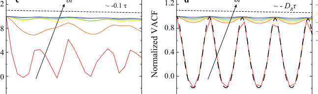
<figcaption class="paper-figure-caption"><b>Fig 1.</b> Figure 1. Comparison between an experimental sperm trajectory and its OABM counterpart. (a) Experimental and simulated TAMSDs, showing the short-lag and intermediate-lag ballistic regimes. Inset: Representative experimental trajectory and synthetic OABM realization generated with parameters inferred from the experiment. Scale bar: 20 µm. (b) Normal PSD of the experimental trajectory, with a dominant peak at fmax = 10.3 Hz. (c) Normalized VACF of the experimental trajectory for several values of δt. For small δt, the VACF retains the oscillatory structure of the sperm-head motion. As δt increases, the velocity averages over the fast oscillations, and the VACF approaches the slow...</figcaption>
</figure>
<figure class="paper-figure-card">
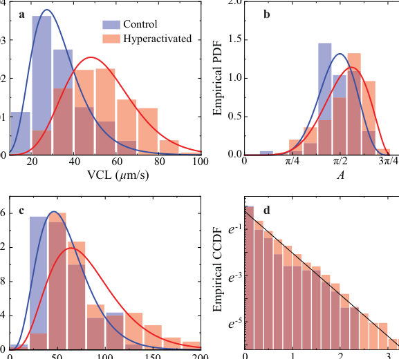
<figcaption class="paper-figure-caption"><b>Fig 2.</b> Figure 3. Empirical distributions of motility parameters obtained from 80 control and 311 sperm hyperactivated trajectories. Solid lines show fits to the selected probability density functions. (a) Curvilinear velocity, VCL, fitted with a log-normal distribution for the control group and a Gamma distribution for the hyperactivated group. (b) Oscillatory amplitude A, fitted with a beta distribution. (c) Angular frequencies Ω, fitted with a Gamma distribution. (d) Complementary cumulative distribution function (CCDF) of the rotational diffusion coefficient DR. The solid black line corresponds to an exponential fit, giving ⟨DR⟩= 0.56 s−1.</figcaption>
</figure>
</div>

<p><strong>Summary.</strong> This paper introduces Oscillatory Active Brownian Motion (OABM), a refined model for sperm movement that accounts for periodic flagellar beating. By fitting this model to experimental tracking data, the authors successfully characterize how intrinsic oscillations govern overall cell transport properties across different physiological states like hyperactivation.</p>
<p><strong>Why it may be interesting.</strong> While focused on biophysics, the use of minimal extensions to standard diffusion models (ABM) and the rigorous statistical inference from complex time-series data mirrors techniques used in modeling non-equilibrium dynamics in disordered or interacting quantum systems.</p>
<details>
<summary>Detailed structure</summary>
<p><strong>Main problem.</strong> Standard Active Brownian Motion (ABM) fails to account for the intrinsic periodic oscillations present in sperm motility, which are crucial for understanding their transport dynamics.</p>
<p><strong>Main result.</strong> The Oscillatory Active Brownian Motion (OABM) model successfully reproduces single-cell and population dynamics for both control and hyperactivated sperm by linking measurable flagellar kinematics to coarse-grained transport.</p>
<p><strong>Method.</strong> The study combines analytical derivations of observables (like MSD and VACF) with fitting procedures, including Maximum Likelihood Estimation (MLE), to infer OABM parameters from experimental tracking data.</p>
<p><strong>Model / system.</strong> The system is mammalian sperm exhibiting active motion. The model used is Oscillatory Active Brownian Motion (OABM), an extension of ABM that incorporates a periodic angular modulation ($\psi(t) = A \cos(\Omega t + \phi)$) into the swimmer's orientation dynamics.</p>
<p><strong>Key observables.</strong> Time-averaged mean-squared displacement (TAMSD), velocity autocorrelation function (VACF), transverse excursion amplitude, straight-line velocity (VSL), and curvilinear velocity (VCL).</p>
<p><strong>Important parameters / regimes.</strong> Swimming velocity ($V$), oscillation amplitude ($A$), beat frequency ($\Omega$), and rotational diffusion coefficient ($D_R$).</p>
<p><strong>Assumptions / limitations.</strong> The analysis assumes that in the relevant experimental regime, averages over oscillatory modulation can be treated as cycle averages; furthermore, the distribution of $D_R$ was found to be independent of hyperactivation state.</p>
<p><strong>Figures summary.</strong> Figures likely show scatter plots and correlation matrices ($
ho$) for fitted OABM parameters ($V, A, \Omega, D_R$) comparing control and hyperactivated groups, demonstrating strong correlations between velocity and amplitude.</p>
<p><strong>Paper structure.</strong> The paper first introduces the limitations of standard ABM. It then develops the OABM framework by deriving analytical expressions for key observables. The methodology involves fitting these derived quantities to experimental sperm trajectory data (control vs. hyperactivated). Finally, it analyzes parameter distributions to distinguish physiological states.</p>
</details>
<details>
<summary>Abstract</summary>
<p>Active biological microswimmers typically combine persistent self-propulsion with cyclic motion generated by flagellar or ciliary beating. However, standard active Brownian motion (ABM) does not explicitly account for these intrinsic oscillations. This limitation is particularly relevant for sperm cells, whose transport depends not only on directional persistence and stochastic reorientation but also on periodic head motion. Here we introduce oscillatory active Brownian motion (OABM), a minimal extension of ABM in which the swimmer orientation undergoes directional diffusion while being modulated by a periodic angular drive. The model yields analytical expressions for experimentally relevant observables, including the time-averaged mean-squared displacement, velocity autocorrelation function, and transverse excursion amplitude. A central prediction is a crossover between two ballistic regimes: short-time motion governed by the swimming velocity and an intermediate regime with a reduced, oscillation-averaged effective velocity determined by the angular beat amplitude. Using trajectories of human sperm, we infer model parameters from standard motility measures. The model quantitatively reproduces both single-cell trajectories and population-level dynamics under control conditions and following induction of hyperactivation. Overall, OABM provides a compact active-matter framework that links measurable flagellar kinematics to coarse-grained transport, enabling a description of sperm motility across different physiological states.</p>
</details>
<p><sub><a href="#top">↑ back to top</a></sub></p>

<p><a id="paper-2607.12032"></a></p>
<h3 id="quantum-incompatibility-of-born-probabilities"><a href="http://arxiv.org/abs/2607.12032v1">Quantum incompatibility of Born probabilities</a></h3>
<p><strong>Authors:</strong> Esteban Castro-Ruiz, Nathan Cohen, Luis C. Barbado, Časlav Brukner<br>
<strong>Type:</strong> both · <strong>Category:</strong> other · <strong>PDF:</strong> <a href="https://arxiv.org/pdf/2607.12032v1">https://arxiv.org/pdf/2607.12032v1</a><br>
<strong>Analysis basis:</strong> full PDF text, analyzed in chunks
<strong>Topic relevance:</strong> <code>quantum measurements</code> <strong>3/5</strong> · <code>quantum optics experiment</code> <strong>3/5</strong> · <code>measurement-induced transitions</code> <strong>2/5</strong> · <code>correlated / nonlocal dissipation</code> <strong>1/5</strong> · <code>driven-dissipative phase transition</code> <strong>1/5</strong> · <code>entanglement &amp; information structure</code> <strong>1/5</strong> · <code>methods for driven-dissipative</code> <strong>1/5</strong> · <code>non-equilibrium dynamics</code> <strong>1/5</strong></p>
<div class="figure-strip-hint">↔ Scroll figures horizontally</div>
<div class="paper-figures-scroll">
<figure class="paper-figure-card">
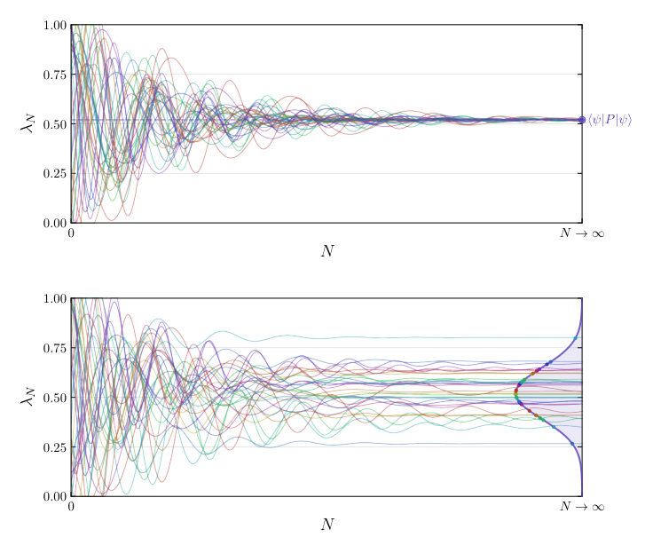
<figcaption class="paper-figure-caption"><b>Fig 1.</b> FIG. 1. In ordinary quantum theory, the value of an observable may be uncertain, but the probabilities are sharply defined. The Born rule assigns each outcome a fixed number p = ⟨ψ| P |ψ⟩, and the law of large numbers guarantees that the relative frequencies recorded over N system copies converge to these probabilities as N →∞: individual outcomes may be uncertain, but the statistics governing them are not. This, however, presupposes an ideal reference frame with respect to which the mea- surements are done. When Alice’s QRF A is non-ideal, this is no longer the case. The N →∞limit of the relative frequencies — namely, the Born probabilities — remain uncertain. This figure is a qualitative...</figcaption>
</figure>
<figure class="paper-figure-card">
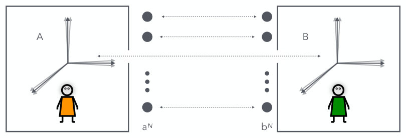
<figcaption class="paper-figure-caption"><b>Fig 2.</b> FIG. 2. Alice and Bob perform local experiments on N copies of their systems a and b, respectively, measuring relative frequencies and expectation values with respect to their local reference frames A and B, which may be prepared in a quantum state. Because these frames are non-ideal, the relative frequencies and expectation values they measure may have a finite uncertainty even in the limit of arbitrarily large N. Here we show that these uncertainties are irreducible in a quantum mechanical sense. That is, the correlations between the RRFs or REVs measured by Alice and Bob may violate Bell inequalities in the large-N limit.</figcaption>
</figure>
<figure class="paper-figure-card">
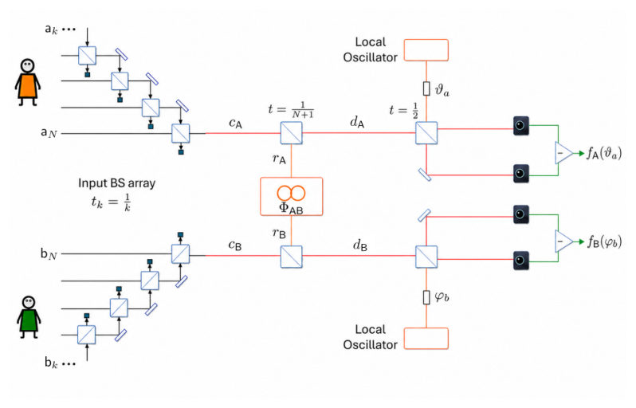
<figcaption class="paper-figure-caption"><b>Fig 3.</b> FIG. 3. Quantum-optical implementation of the Bell experiment for relational expectation values. Alice and Bob receive a block of N signal modes, a1, . . . , aN and b1, . . . , bN, respectively. The input beam-splitter arrays coherently combine each block into the collective modes cA = N −1/2 PN i=1 ai and cB = N −1/2 PN i=1 bi. With the convention used in the figure, the k-th beam splitter in the input array has intensity transmissivity tk = 1/k, for k = 2, . . . , N, for the newly added input mode into the continuing collective output mode. The collective modes cA, cB are mixed locally with the quantum-reference-frame modes rA, rB, prepared in the entangled state ΦAB. The unbalanced beam...</figcaption>
</figure>
</div>

<p><strong>Summary.</strong> The paper argues that assuming ideal reference frames when calculating probabilities leads to an oversimplification. By analyzing measurements relative to finite-resource Quantum Reference Frames, the authors demonstrate that the resulting relative frequencies are fundamentally uncertain, violating Bell inequalities in the large repetition limit. This suggests a necessary revision of the quantum state concept for regimes constrained by physical resources.</p>
<p><strong>Why it may be interesting.</strong> This work directly impacts foundational quantum theory, suggesting that resource constraints fundamentally alter the probabilistic structure of quantum mechanics, which is highly relevant for understanding measurement processes near gravitational boundaries.</p>
<details>
<summary>Detailed structure</summary>
<p><strong>Main problem.</strong> The paper investigates how quantum probabilities behave when measurements are performed relative to non-ideal, finite-resource Quantum Reference Frames (QRFs), challenging the assumption that standard Born rules hold universally.</p>
<p><strong>Main result.</strong> When reference frames are resource-limited, the relative frequencies themselves become fundamentally indefinite, violating Bell-type inequalities even in the large repetition limit.</p>
<p><strong>Method.</strong> The authors develop mathematical tools using relative frequency operators and construct CHSH-type correlators to test for compatibility with local hidden variable models.</p>
<p><strong>Model / system.</strong> The model involves a system measured repeatedly (i.i.d. copies) whose measurement context is defined by an auxiliary, physical QRF. This framework is proposed to be implemented using pulsed continuous-variable quantum optics and homodyne detection.</p>
<p><strong>Key observables.</strong> Relative frequencies ($
u$), Relational Relative Frequency Operators ($F_N(P)$), and CHSH-type correlators ($C$).</p>
<p><strong>Important parameters / regimes.</strong> The large number of repetitions limit ($N 	o \infty$) is crucial, as the breakdown of assumptions occurs in this regime.</p>
<p><strong>Assumptions / limitations.</strong> The standard notion of a quantum state breaks down when macroscopic reference frames are unavailable; the analysis relies on taking the $N 	o \infty$ limit operationally.</p>
<p><strong>Figures summary.</strong> Not specified by notes, but the structure implies showing the violation of Bell inequalities in the large-N limit for both discrete and continuous variable settings.</p>
<p><strong>Paper structure.</strong> The paper progresses from establishing the problem with ideal reference frames to introducing relative frequency operators. It then develops constructions (POVM vs PVM) and culminates by applying these tools to show violations of Bell inequalities, particularly in the continuous variable setting using a CHSH-type correlator.</p>
</details>
<details>
<summary>Abstract</summary>
<p>Quantum theory challenges the view that individual measurement outcomes are predefined and independent of the measurement context. Yet the quantum state itself -- the catalogue of probabilities for all possible measurements -- is usually assumed to be well defined. We argue that this assumption tacitly relies on measurements being performed relative to ideal, infinitely-resourceful reference frames. We show that, when measurements are made relative to non-ideal quantum reference frames, the probabilities themselves become indefinite: even in the limit of arbitrarily large number of runs, the relative frequencies may remain uncertain. The uncertainty is irreducible in a quantum-mechanical sense, as we show by proving a Bell-type theorem for relative frequencies. We further propose a quantum-optical implementation of these relational measurements based on pulsed homodyne detection. Our findings motivate an extension of the notion of the quantum state to regimes constrained by finite resources. We expect them to be especially relevant at the interface between quantum theory and general relativity, where the resources and information available in a bounded region of spacetime are fundamentally limited.</p>
</details>
<p><sub><a href="#top">↑ back to top</a></sub></p>

<p><a id="paper-2607.12961"></a></p>
<h3 id="active-quantum-nematics-the-first-quantization"><a href="http://arxiv.org/abs/2607.12961v1">Active Quantum Nematics: The First Quantization</a></h3>
<p><strong>Authors:</strong> Ghansham Chandel, Siddhartha Das<br>
<strong>Type:</strong> theory · <strong>Category:</strong> other · <strong>PDF:</strong> <a href="https://arxiv.org/pdf/2607.12961v1">https://arxiv.org/pdf/2607.12961v1</a><br>
<strong>Analysis basis:</strong> full PDF text, analyzed in chunks
<strong>Topic relevance:</strong> <code>driven-dissipative phase transition</code> <strong>3/5</strong> · <code>non-equilibrium dynamics</code> <strong>3/5</strong> · <code>non-equilibrium universality</code> <strong>2/5</strong> · <code>Keldysh / 2PI / non-Gaussian methods</code> <strong>1/5</strong> · <code>analog quantum simulation</code> <strong>1/5</strong> · <code>correlated / nonlocal dissipation</code> <strong>1/5</strong> · <code>methods for driven-dissipative</code> <strong>1/5</strong></p>
<div class="figure-strip-hint">↔ Scroll figures horizontally</div>
<div class="paper-figures-scroll">
<figure class="paper-figure-card">
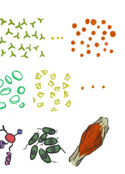
<figcaption class="paper-figure-caption"><b>Fig 1.</b> Fig. 1 This figure illustrates the generality of continuums. (a) Shows mathematically idealized objects such as vectors, nematic director, tri-atic director, etc. (b) Shows idealized objects that may be represented by such mathematical objects. (c) Represents the objects in physical world that are routinely modeled as continumms.</figcaption>
</figure>
<figure class="paper-figure-card">
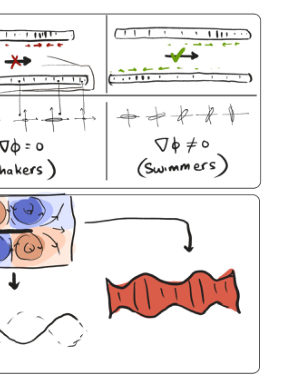
<figcaption class="paper-figure-caption"><b>Fig 2.</b> Fig. 2 This figure illustrate the difference between peristaltic swimmers and shaker creatures. (a) Prototypical elongated active clump that has potential to swim. (b) When creatures moves its entire body in sync, no motion of self can be produced, but locally varying activation time induces peristaltic motion. (c) The motion of |ζ⟩in the complex plane. (d) The visualization of ϕ with space that does not and dose induce motion. (e) Illustration of typical creatures capable of creating vortices for the purpose of movement.</figcaption>
</figure>
<figure class="paper-figure-card">
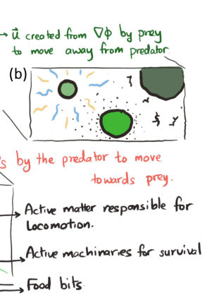
<figcaption class="paper-figure-caption"><b>Fig 3.</b> Fig. 3 Illustration of predator-prey operating on chemotaxis. (a) The biosignal fields ϕs and ϕ signaling predators and prey the best suited direction of motion to hunt/survive. (b) Typical exaple of biosignals, such as heat, sound, ATP and pheromones. (c) Internal arrangement of the predator that uses ∇ϕ to generate activity (red), which also has activity not responsible for motion (orange).</figcaption>
</figure>
<figure class="paper-figure-card">
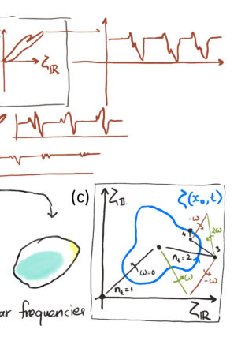
<figcaption class="paper-figure-caption"><b>Fig 4.</b> Fig. 4 Illustration of pulsating active bodies. (a) A beating heart simplified to spherical bodies, with the pulses illustratively plotted in complex plane as well as pulse-time graph. (b) For any given energy eigenstates, various orbitals that beat independently to squeeze blood across body. (c) An illustration of how superposition of various eigenstates relates to evolving vectors in Hilbert space (|ζ⟩in this particular figure).</figcaption>
</figure>
</div>

<p><strong>Summary.</strong> This paper develops the theory of Active Quantum Nematics by embedding continuum descriptions of active matter into a quantum mechanical framework using a complex wavefunction ($\psi$). It successfully models diverse biological phenomena—from bacterial swimming to heart beating—by predicting quantized behaviors and deriving force laws based on wave mechanics principles.</p>
<p><strong>Why it may be interesting.</strong> It provides a novel theoretical bridge between classical active matter physics (hydrodynamics/soft matter) and fundamental quantum mechanics formalism. The use of wavefunctions to describe non-equilibrium, self-propelled systems is highly relevant for open quantum systems research.</p>
<details>
<summary>Detailed structure</summary>
<p><strong>Main problem.</strong> The paper aims to formalize Active Nematics (AN) and Liquid Crystal theory within a quantum mechanical framework, creating 'Active Quantum Nematics' (AQN). This unifies concepts from active matter physics with quantum field formalism.</p>
<p><strong>Main result.</strong> The introduction of a complex Nematic Wavefunction ($\psi$) allows the system to exhibit quantized features, predicting relationships like Planck's energy-frequency relation for micro-swimmers and characterizing biological activity via wave mechanics.</p>
<p><strong>Method.</strong> The methodology involves extending continuum mechanics equations by introducing quantum operators and utilizing analogies to the Dirac equation structure. Key techniques include expectation value calculations and Helmholtz decomposition of velocity fields.</p>
<p><strong>Model / system.</strong> The model describes active nematic continua, which can represent biological systems like peristaltic worms or beating hearts. The dynamics are governed by coupled equations involving a complex wavefunction $\psi$ and various potential fields ($\phi$, $\phi_S$).</p>
<p><strong>Key observables.</strong> The Nematic Wavefunction ($\psi$), its conserved probability density ($|\psi|^2$), the total power eigenvalue ($E = \hbar_A\omega$), and derived active forces ($f_{\phi u}$).</p>
<p><strong>Important parameters / regimes.</strong> The quantum action scale ($\hbar_A$), activity coefficients, and parameters governing chemotaxis/biosignal diffusion.</p>
<p><strong>Assumptions / limitations.</strong> It assumes that the complex phase angle ($\phi$) dictates the evolution of $\psi$, and it often simplifies by ignoring passive elastic stresses or assuming constant drag coefficients.</p>
<p><strong>Figures summary.</strong> Figures illustrate peristaltic swimmers vs. shaker creatures, and depict predator-prey chemotaxis using biosignal fields ($\phi_S$) coupled to internal activity potentials.</p>
<p><strong>Paper structure.</strong> The paper builds from the standard AN equations by introducing $\psi$ (analogous to Dirac structure), deriving quantum interaction terms via potential transformations, and finally applying this framework to specific biological examples like predator-prey dynamics and cardiac pulsation analysis using harmonic expansion.</p>
</details>
<details>
<summary>Abstract</summary>
<p>Nematic symmetry entails conserved quantized quantities such as number of topological defects and vorticity cells. Correspondingly, countless quantum analogies have been found in Active Nematics. We formalize Active Nematics and Liquid Crystal theory into the framework of Quantum Mechanics by introducing a complex valued Nematic Wavefunction to the Beris Edward equations, thus splitting spatiotemporally varying nematic systems into quantized states. We obtain the Planck's energy-frequency relationship for active micro-swimmers such as peristaltic worms and bacterium as a consequence of local complex phase-symmetry of the governing equations, similar to the gauge formulation of Electromagnetism. For organisms operating on diffusive chemotaxis, we obtain predator-prey dynamics that evolve to maximize/minimize pheromones field gradient overlap. Furthermore, when quantizing beating hearts, similar to the orbitals of hydrogen atoms, the state-function allows us to characterize hearts not only through the rhythm, but also the spaciotemporal distribution of contractile activity of various harmonics among healthy and unhealthy hearts.</p>
</details>
<p><sub><a href="#top">↑ back to top</a></sub></p>

<p><a id="paper-2607.12676"></a></p>
<h3 id="entanglement-and-optical-nonreciprocity-in-spontaneous-raman-scattering"><a href="http://arxiv.org/abs/2607.12676v1">Entanglement and Optical Nonreciprocity in spontaneous Raman Scattering</a></h3>
<p><strong>Authors:</strong> Frank Schlawin<br>
<strong>Type:</strong> theory · <strong>Category:</strong> other · <strong>PDF:</strong> <a href="https://arxiv.org/pdf/2607.12676v1">https://arxiv.org/pdf/2607.12676v1</a><br>
<strong>Analysis basis:</strong> full PDF text, analyzed in chunks
<strong>Topic relevance:</strong> <code>methods for driven-dissipative</code> <strong>3/5</strong> · <code>correlated / nonlocal dissipation</code> <strong>2/5</strong> · <code>entanglement &amp; information structure</code> <strong>2/5</strong> · <code>Keldysh / 2PI / non-Gaussian methods</code> <strong>1/5</strong> · <code>driven-dissipative phase transition</code> <strong>1/5</strong> · <code>interference shaping light</code> <strong>1/5</strong> · <code>non-equilibrium dynamics</code> <strong>1/5</strong></p>
<div class="figure-strip-hint">↔ Scroll figures horizontally</div>
<div class="paper-figures-scroll">
<figure class="paper-figure-card">
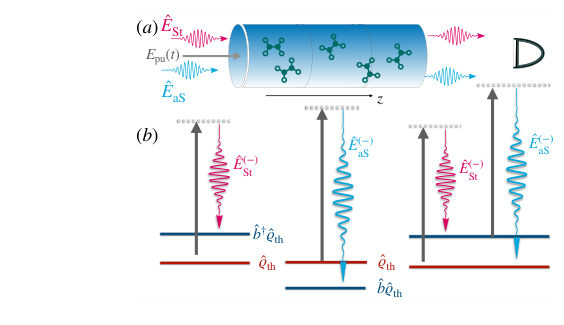
<figcaption class="paper-figure-caption"><b>Fig 1.</b> Figure 1. (a) Sketch of the setup considered here. We discuss Stokes-anti-Stokes-scattering in a collinear setup, where the sample is contained in a volume of length L. (b) Inelastic scattering pro- cesses included here: individual scattering processes involving only Stokes or anti-Stokes fields change the phonon populations. In addition, correlated events are mediated by the sample without changing its phonon population.</figcaption>
</figure>
<figure class="paper-figure-card">
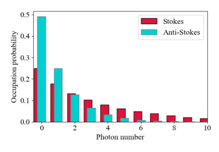
<figcaption class="paper-figure-caption"><b>Fig 2.</b> Figure 2. Photon distribution of Stokes and anti- Stokes fields for resonant excitation (i.e. ∆= 0), zero phonon population nth = 0.0, and conversion strength Γcw = 1.0.</figcaption>
</figure>
<figure class="paper-figure-card">
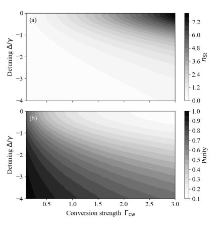
<figcaption class="paper-figure-caption"><b>Fig 3.</b> Figure 3. (a) The mean Stokes photon umber ⟨ˆnSt⟩, for cw Raman scattering, is plotted vs. the detuning ∆and the cw conversion strength Γcw. (b) same a (a) for the purity of the output photonic state. In both plots, we consider a sample with nth = 0.</figcaption>
</figure>
<figure class="paper-figure-card">
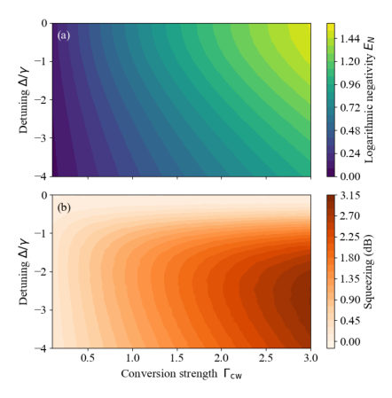
<figcaption class="paper-figure-caption"><b>Fig 4.</b> Figure 4. (a) The logarithmic negativity EN (19), for cw Raman scattering, is plotted vs. the detuning ∆and the cw conversion strength Γcw. (b) same as (a) for the degree of squeezing of the output photonic state. In both plots, we consider a sample with nth = 0.</figcaption>
</figure>
<figure class="paper-figure-card">
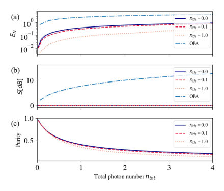
<figcaption class="paper-figure-caption"><b>Fig 5.</b> Figure 5. Logarithmic negativity (19) [top panel], squeezing of collective Stokes and anti-Stokes quadra- tures [center panel] and purity [bottom panel] are plotted vs the total photon number. In each case, the corresponding simulations are compared to a two- mode squeezed state (24), labelled OPA.</figcaption>
</figure>
</div>

<p><strong>Summary.</strong> This paper develops a rigorous quantum theory for spontaneous Raman scattering, treating it as an entangled-photon generation process. Using advanced techniques like the cumulant expansion, the authors demonstrate that the interaction leads to unique chiral couplings causing optical nonreciprocity. The findings provide a theoretical blueprint for developing quantum photonic protocols based on enhanced and controlled Raman spectroscopy.</p>
<p><strong>Why it may be interesting.</strong> This work is highly relevant for AMO/Quantum Optics as it applies advanced open quantum system techniques (master equations, cumulant expansion) to a fundamental spectroscopic process (Raman scattering), yielding insights into generating nonclassical light sources and understanding dissipation effects on quantum correlations.</p>
<details>
<summary>Detailed structure</summary>
<p><strong>Main problem.</strong> To develop a microscopic quantum theory for spontaneous Raman scattering that connects naturally to entangled-photon generation models while correctly accounting for the resonant and dissipative nature of the process.</p>
<p><strong>Main result.</strong> The theory establishes that Raman scattering induces chiral couplings between Stokes and anti-Stokes sidebands, leading to optical nonreciprocity. Crucially, it shows that while entanglement can be generated, true squeezing below the vacuum noise limit is not achieved in this resonant process.</p>
<p><strong>Method.</strong> The analysis employs a cumulant-expansion approach applied to the quantum evolution map derived from the interaction Hamiltonian, resulting in a cascaded master equation (Lindblad form).</p>
<p><strong>Model / system.</strong> The system is spontaneous Raman scattering involving Stokes and anti-Stokes sidebands driven by a pump field. The dynamics are modeled using an effective two-photon operator formalism within a quantum map framework.</p>
<p><strong>Key observables.</strong> Logarithmic negativity (entanglement measure), squeezing factor, mean photon number ($\langle \hat{n}_{St} 
angle$), and the nonreciprocal amplification characteristics.</p>
<p><strong>Important parameters / regimes.</strong> Phonon occupation number ($ar{n}$), detuning ($\Delta$), conversion strength ($\Gamma_{cw}$), and phase mismatch ($\Delta k$).</p>
<p><strong>Assumptions / limitations.</strong> The pump field is treated classically (undepleted-pump approximation), and the phonon bath is assumed to be in a thermal state, which limits the description of full quantum dynamics.</p>
<p><strong>Figures summary.</strong> Figures illustrate collinear setups for Stokes-anti-Stokes scattering; plots show mean Stokes photon number enhancement vs. detuning/coupling strength, and logarithmic negativity trends following this enhancement.</p>
<p><strong>Paper structure.</strong> The paper progresses from establishing the fundamental Hamiltonian and using cumulant expansion to derive a master equation. It then analyzes different excitation regimes (cw vs. ultrafast) and incorporates propagation effects via phase matching factors before concluding with diagnostic measurements of entanglement and nonreciprocity.</p>
</details>
<details>
<summary>Abstract</summary>
<p>Inelastic light scattering is a central tool for sample characterization and label-free imaging across the physical and life sciences. Recent work has suggested that scattered light can also exhibit nonclassical correlations. Here, we develop a microscopic theory of Raman scattering that connects naturally to established descriptions of entangled-photon generation in three- and four-wave mixing, while capturing essential differences arising from the resonant, dissipative character of Raman scattering. Using a cumulant-expansion approach, we analyze the entanglement structure of the scattered sidebands and identify signatures that distinguish Raman-mediated correlations from those generated in conventional off-resonant nonlinear wave mixing. In particular, we show that Raman scattering induces chiral couplings between Stokes and anti-Stokes sidebands, leading to nonreciprocal amplification of coherent seed fields. These results establish a theoretical framework for Raman-based quantum photonic protocols and suggest routes toward quantum-enhanced Raman spectroscopy and imaging.</p>
</details>
<p><sub><a href="#top">↑ back to top</a></sub></p>

<p><a id="paper-2607.12064"></a></p>
<h3 id="low-temperature-holographic-conductivity"><a href="http://arxiv.org/abs/2607.12064v1">Low-Temperature Holographic Conductivity</a></h3>
<p><strong>Authors:</strong> Sabyasachi Maulik, Leopoldo A. Pando Zayas, Jingchao Zhang<br>
<strong>Type:</strong> theory · <strong>Category:</strong> strongly correlated electrons · <strong>PDF:</strong> <a href="https://arxiv.org/pdf/2607.12064v1">https://arxiv.org/pdf/2607.12064v1</a><br>
<strong>Analysis basis:</strong> full PDF text, analyzed in chunks
<strong>Topic relevance:</strong> <code>Keldysh / 2PI / non-Gaussian methods</code> <strong>3/5</strong> · <code>Kondo &amp; dissipative impurity</code> <strong>2/5</strong> · <code>non-equilibrium dynamics</code> <strong>2/5</strong> · <code>correlated / nonlocal dissipation</code> <strong>1/5</strong> · <code>driven-dissipative phase transition</code> <strong>1/5</strong> · <code>methods for driven-dissipative</code> <strong>1/5</strong> · <code>non-equilibrium universality</code> <strong>1/5</strong></p>
<div class="figure-strip-hint">↔ Scroll figures horizontally</div>
<div class="paper-figures-scroll">
<figure class="paper-figure-card">
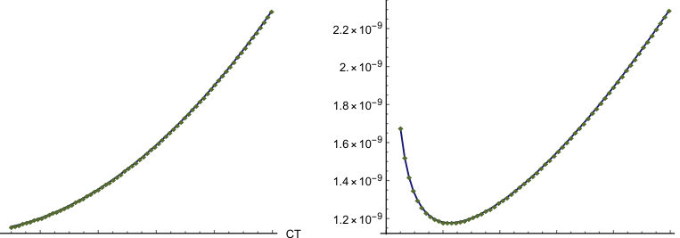
<figcaption class="paper-figure-caption"><b>Fig 1.</b> Figure 1. Comparison between numerical result and analytic estimate of the retarded Green’s function Im GR, IR (ω). The solid line denotes the analytical curve, and the dots denote numerically obtained values. For numerical integration we choose Cω = 10−8.</figcaption>
</figure>
<figure class="paper-figure-card">
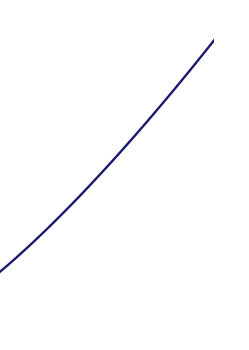
<figcaption class="paper-figure-caption"><b>Fig 2.</b> Figure 2. The quantum-corrected holographic conductivity at very low temperatures.</figcaption>
</figure>
<figure class="paper-figure-card">
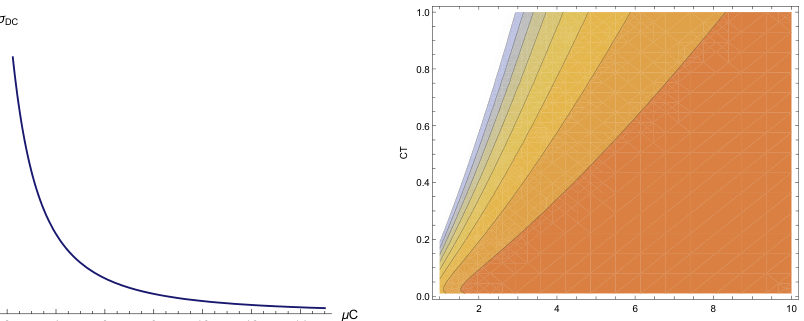
<figcaption class="paper-figure-caption"><b>Fig 3.</b> Figure 3. Dependence of holographic DC conductivity (σDC) on the chemical potential (µ): (a) For fixed temperature, the DC conductivity decreases monotonically and approaches zero for large µ. (b) A contour plot of σDC as a function of CT and µC.</figcaption>
</figure>
<figure class="paper-figure-card">
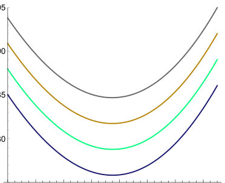
<figcaption class="paper-figure-caption"><b>Fig 4.</b> Figure 4. Frequency-dependent holographic optical conductivity, the temperature de- creases from top to bottom.</figcaption>
</figure>
<figure class="paper-figure-card">
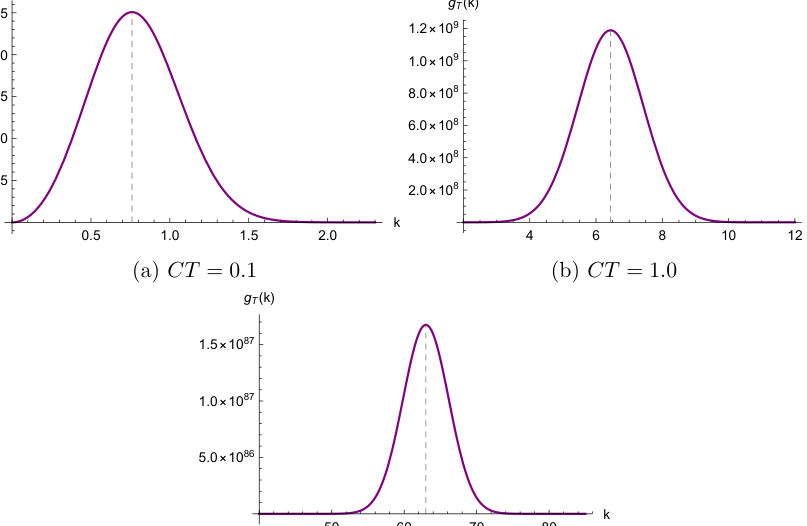
<figcaption class="paper-figure-caption"><b>Fig 5.</b> Figure 6. The function gT (k) is shown for different temperatures, CT = 0.1, 1.0, 10.0. In every case there is a bell-shaped region, but the maximum value increases rapidly with T.</figcaption>
</figure>
</div>

<p><strong>Summary.</strong> This paper calculates how quantum effects modify the electrical conductivity of a black brane at very low temperatures using holographic methods. It derives a non-monotonic temperature dependence for this conductivity by comparing results from an effective 2D action against direct one-loop gravitational calculations. The findings highlight that quantum corrections significantly alter the expected low-temperature behavior.</p>
<p><strong>Why it may be interesting.</strong> While focused on gravity/condensed matter duality, the analysis of strongly coupled low-temperature transport coefficients and quantum corrections mirrors problems in strongly correlated electron systems where thermal fluctuations are suppressed.</p>
<details>
<summary>Detailed structure</summary>
<p><strong>Main problem.</strong> The study revisits holographic electrical conductivity at very low temperatures where quantum fluctuations near a black brane throat are strongly coupled.</p>
<p><strong>Main result.</strong> The quantum-corrected conductivity exhibits a non-monotonic temperature dependence, decreasing to a minimum before growing as $1/\sqrt{CT}$ in the deep low-temperature limit.</p>
<p><strong>Method.</strong> The authors employ two complementary theoretical approaches: using an effective two-dimensional action capturing Schwarzian modes, and calculating the one-loop contribution directly from the four-dimensional gravitational path integral.</p>
<p><strong>Model / system.</strong> The model involves a near-extremal Reissner-Nordström (RN) black brane in AdS$_4$ spacetime, analyzed via holographic methods derived from the AdS/CFT correspondence.</p>
<p><strong>Key observables.</strong> Holographic electrical conductivity ($\sigma_{DC}$), quantum corrections to transport coefficients.</p>
<p><strong>Important parameters / regimes.</strong> Temperature ($T$), chemical potential ($\mu$), and the dimensionless parameter $CT$.</p>
<p><strong>Assumptions / limitations.</strong> The analysis relies on treating quantum fluctuations via effective 2D actions or performing one-loop calculations in the gravitational path integral, assuming validity in specific temperature regimes.</p>
<p><strong>Figures summary.</strong> Figure 6 shows a function $g_T(k)$ with a maximum increasing rapidly with $T$; Figure 8 compares the two-dimensional Wightman function numerically to analytical estimates.</p>
<p><strong>Paper structure.</strong> The paper reviews standard DC conductivity calculations using linearized fluctuations, then develops and compares results from an effective 2D Schwarzian mode action against direct 4D gravitational path integral methods for quantum corrections.</p>
</details>
<details>
<summary>Abstract</summary>
<p>We revisit holographic electrical conductivity in the regime of very low temperatures where quantum fluctuations in the throat of the near-extremal, asymptotically AdS$_4$ dual black brane are strongly coupled. We treat the fluctuations via an effective two-dimensional action capturing the effects of the Schwarzian modes at the scale $1/C$. Our main result is a non-monotonic temperature dependence: the quantum-corrected conductivity decreases as the temperature is lowered, reaches a minimum at $(CT_{\mathrm{min}}\simeq 0.023)$, and grows as $(1/\sqrt{CT})$ for $(CT\ll 1)$. We further estimate the one-loop contribution to the conductivity directly from the four-dimensional gravitational path integral and find qualitative agreement with the effective two-dimensional description in the regime $(CT\gg 1)$. We find that quantum corrections substantially modify the low-temperature behavior of the holographic conductivity in both approaches.</p>
</details>
<p><sub><a href="#top">↑ back to top</a></sub></p>

<p><a id="paper-2607.12066"></a></p>
<h3 id="low-temperature-quantum-corrected-holographic-transport-with-momentum-relaxation"><a href="http://arxiv.org/abs/2607.12066v1">Low-temperature Quantum-corrected Holographic Transport with Momentum Relaxation</a></h3>
<p><strong>Authors:</strong> Suman Das, Sabyasachi Maulik, Leopoldo A. Pando Zayas, Jingchao Zhang<br>
<strong>Type:</strong> theory · <strong>Category:</strong> strongly correlated electrons · <strong>PDF:</strong> <a href="https://arxiv.org/pdf/2607.12066v1">https://arxiv.org/pdf/2607.12066v1</a><br>
<strong>Analysis basis:</strong> full PDF text, analyzed in chunks
<strong>Topic relevance:</strong> <code>non-equilibrium dynamics</code> <strong>3/5</strong> · <code>driven-dissipative phase transition</code> <strong>2/5</strong> · <code>non-equilibrium universality</code> <strong>2/5</strong> · <code>Keldysh / 2PI / non-Gaussian methods</code> <strong>1/5</strong> · <code>Kondo &amp; dissipative impurity</code> <strong>1/5</strong> · <code>correlated / nonlocal dissipation</code> <strong>1/5</strong> · <code>methods for driven-dissipative</code> <strong>1/5</strong></p>
<div class="figure-strip-hint">↔ Scroll figures horizontally</div>
<div class="paper-figures-scroll">
<figure class="paper-figure-card">
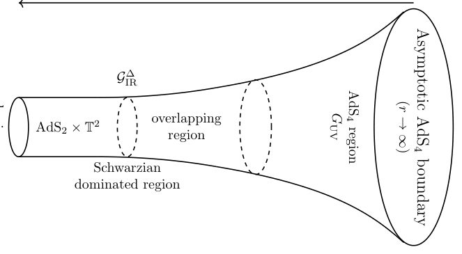
<figcaption class="paper-figure-caption"><b>Fig 1.</b> Figure 1: A schematic view of the near-extremal black brane geometry. A long AdS2 × T 2 throat appears close to the outer horizon (r →r+). Far from the hori- zon (r →∞), the spacetime asymptotes to a four-dimensional anti-de Sitter geome- try. The two regions are smoothly connected through an ‘overlapping region’ where the matched asymptotic expansion is performed in the semiclassical analysis. The Schwarzian modes get strongly coupled at sufficiently low temperature, and domi- nate the near-horizon physics.</figcaption>
</figure>
<figure class="paper-figure-card">
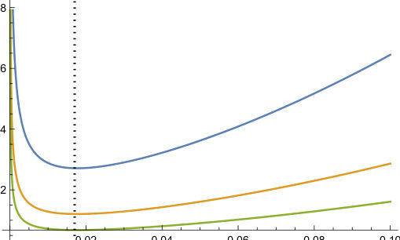
<figcaption class="paper-figure-caption"><b>Fig 2.</b> Figure 2: Behavior of η, given by Equation (4.19), as a function of CT for various values of the Schwarzian coupling parameter C. The transverse volume is set to V2 = 1. The vertical line indicates the position of the minimum, located at CTmin ≈ 0.01769, which is independent of C.</figcaption>
</figure>
<figure class="paper-figure-card">
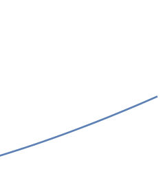
<figcaption class="paper-figure-caption"><b>Fig 3.</b> Figure 3: Quantum-corrected η/s as a function of CT for r0 = 1, V2 = 3/4.</figcaption>
</figure>
<figure class="paper-figure-card">

<figcaption class="paper-figure-caption"><b>Fig 4.</b> Figure 4: Behavior of DC conductivity σDC, given in Equation (4.29), as a function of CT.</figcaption>
</figure>
<figure class="paper-figure-card">

<figcaption class="paper-figure-caption"><b>Fig 5.</b> Figure 5: The behavior of η/s with ω for different values of the relaxation parameter α.</figcaption>
</figure>
</div>

<p><strong>Summary.</strong> This paper calculates how quantum fluctuations modify transport properties like viscosity and conductivity near extremal black branes using the AdS/CFT correspondence. It finds universal low-temperature enhancements, predicting non-monotonic temperature dependence similar to that observed in real correlated materials. This work provides holographic signatures of quantum gravity effects on condensed matter transport.</p>
<p><strong>Why it may be interesting.</strong> The observation of non-monotonic temperature dependence with a minimum, analogous to behavior seen in correlated materials (like strange metals), provides holographic evidence for quantum gravity effects influencing transport in strongly interacting systems.</p>
<details>
<summary>Detailed structure</summary>
<p><strong>Main problem.</strong> The study determines quantum corrections to transport properties, such as shear viscosity and electrical conductivity, at low temperatures in holographic models that incorporate momentum relaxation.</p>
<p><strong>Main result.</strong> Quantum fluctuations lead to a universal low-temperature enhancement of transport; specifically, for certain operators, this manifests as a non-monotonic temperature dependence with a minimum at $T_{
m min} \propto C^{-1}$.</p>
<p><strong>Method.</strong> The analysis employs the AdS/CFT correspondence, calculating transport coefficients via Kubo formulas applied to retarded Green's functions in the near-extremal black brane limit.</p>
<p><strong>Model / system.</strong> The model uses holographic gravity coupled to matter fields (e.g., an isotropic linear axion model) describing a black brane geometry with momentum relaxation mechanisms built into the bulk action.</p>
<p><strong>Key observables.</strong> Shear viscosity ($\eta$) and DC electrical conductivity ($\sigma_{DC}$), analyzed through retarded Green's functions.</p>
<p><strong>Important parameters / regimes.</strong> Low temperature limit ($T 	o 0$), extremal black brane geometry, momentum relaxation scale ($\alpha$), and the Schwarzian scaling dimension ($\Delta$).</p>
<p><strong>Assumptions / limitations.</strong> The analysis relies on the holographic duality (AdS/CFT) and approximations for quantum corrections in the near-horizon region.</p>
<p><strong>Paper structure.</strong> The paper progresses by establishing the necessity of quantum corrections due to thermodynamic inconsistencies, then calculating $\eta$ and $\sigma_{DC}$ using advanced techniques involving matched asymptotic expansions and analyzing the order dependence of limits in the Kubo formula application.</p>
</details>
<details>
<summary>Abstract</summary>
<p>We determine the quantum corrections to transport arising from fluctuations of the near-AdS${}_2$ throat of near-extremal black branes in holographic models with momentum relaxation. By computing the shear viscosity and electrical conductivity at both zero and finite chemical potential, we uncover a universal low-temperature enhancement of transport generated by Schwarzian quantum fluctuations. Specifically, transport coefficients extracted from retarded Green's functions increase throughout the regime $C T \ll 1$. For operators with Schwarzian scaling dimension $Δ>1$, this enhancement is preceded by a universal minimum at a characteristic temperature $T_{\rm min} \propto C^{-1}$, leading to a non-monotonic temperature dependence strikingly similar to that observed in many correlated materials. In contrast, for the case $Δ=1$, relevant for the electrical conductivity, the transport coefficient evolves monotonically toward a constant value. Our results identify universal signatures of near-horizon quantum gravity in the transport properties of holographic quantum matter.</p>
</details>
<p><sub><a href="#top">↑ back to top</a></sub></p>

<p><a id="paper-2607.12813"></a></p>
<h3 id="supernova-neutrinos-and-the-origin-of-biomolecular-homochirality"><a href="http://arxiv.org/abs/2607.12813v1">Supernova Neutrinos and the Origin of Biomolecular Homochirality</a></h3>
<p><strong>Authors:</strong> Amirmasoud Jannat, Soroush Shakeri, Farhad Shahbazi<br>
<strong>Type:</strong> theory · <strong>Category:</strong> statistical mechanics · <strong>PDF:</strong> <a href="https://arxiv.org/pdf/2607.12813v1">https://arxiv.org/pdf/2607.12813v1</a><br>
<strong>Analysis basis:</strong> full PDF text, analyzed in chunks
<strong>Topic relevance:</strong> <code>methods for driven-dissipative</code> <strong>3/5</strong> · <code>non-equilibrium dynamics</code> <strong>3/5</strong> · <code>non-equilibrium universality</code> <strong>2/5</strong> · <code>Keldysh / 2PI / non-Gaussian methods</code> <strong>1/5</strong> · <code>correlated / nonlocal dissipation</code> <strong>1/5</strong> · <code>driven-dissipative phase transition</code> <strong>1/5</strong></p>
<div class="figure-strip-hint">↔ Scroll figures horizontally</div>
<div class="paper-figures-scroll">
<figure class="paper-figure-card">

<figcaption class="paper-figure-caption"><b>Fig 1.</b> FIG. 1. Activation energy of the racemization reaction (a) without and (b) with applying parity-violation interaction.</figcaption>
</figure>
<figure class="paper-figure-card">

<figcaption class="paper-figure-caption"><b>Fig 2.</b> FIG. 2. Chemical scheme of the system, Eqs. (5) - (9), con- sidering enantiomer-neutrino interactions. The green arrows represent the autocatalytic reactions, the red arrows repre- sent the non-autocatalytic decays and their backward reac- tions, and finally, the yellow arrow represents the neutrino- enantiomer reaction.</figcaption>
</figure>
<figure class="paper-figure-card">

<figcaption class="paper-figure-caption"><b>Fig 3.</b> FIG. 3. The schematic picture of how Eq (23) describes the time evolution of P(x, t) due to the stoichiometry matrix.</figcaption>
</figure>
<figure class="paper-figure-card">

<figcaption class="paper-figure-caption"><b>Fig 4.</b> FIG. 4. Time evolution of the probability distribution of the system for different temperatures as labeled and for fixed parameters: V=106 km3, L=1053 erg/s, r=0.01 AU, Grac=26.30 kJ/mol. The vertical axis is enantiomeric excess, and the horizontal axis is time in Myr scale.</figcaption>
</figure>
<figure class="paper-figure-card">

<figcaption class="paper-figure-caption"><b>Fig 5.</b> FIG. 5. Thermal evolution of the mean value of ω for the final probability distribution of the system at 300 Myr. The error bars show the standard deviation of the distribution at each temperature for fixed parameters : V=106 km3, L=1053</figcaption>
</figure>
</div>

<p><strong>Summary.</strong> This paper proposes that supernova neutrinos can act as a source for the initial seeds of life's chirality. By coupling parity-violating neutrino interactions into autocatalytic chemical reactions within interstellar clouds, the authors show that tiny directional biases are amplified by non-equilibrium dynamics to produce significant homochirality.</p>
<p><strong>Why it may be interesting.</strong> This work models non-equilibrium chemical dynamics driven by an external, weak quantum field effect (neutrinos) acting on chiral systems, which is a prime example of open quantum system dynamics in a far-from-equilibrium setting.</p>
<details>
<summary>Detailed structure</summary>
<p><strong>Main problem.</strong> The study investigates whether parity-violating interactions from supernova neutrinos can provide an astrophysical mechanism to generate the necessary homochirality in interstellar molecular clouds.</p>
<p><strong>Main result.</strong> The combination of neutrino-induced directional bias, autocatalysis, and stochastic fluctuations allows for an amplification mechanism that predicts an enantiomeric excess greater than 10%, consistent with meteorite analyses.</p>
<p><strong>Method.</strong> The authors solve stochastic differential equations (in the Itô sense) derived from a chemical reaction scheme incorporating parity-violating energy differences ($\Delta E_{PV}$).</p>
<p><strong>Model / system.</strong> The model describes autocatalytic chemical reactions in an Interstellar Molecular Cloud near a supernova, where neutrino interactions introduce a directional bias term into the system dynamics.</p>
<p><strong>Key observables.</strong> Enantiomeric excess (ee) of chiral molecules ($\omega$), and the probability distribution of this excess over time.</p>
<p><strong>Important parameters / regimes.</strong> Neutrino flux ($10^{33}-10^{35} 	ext{ cm}^{-2}	ext{s}^{-1}$), Supernova Luminosity ($\sim 10^{51} - 10^{53} 	ext{ erg/s}$), and the Parity Violation Energy Difference ($\Delta E_{PV}$).</p>
<p><strong>Assumptions / limitations.</strong> The neutrino interaction term is treated as a deterministic component of the chemical scheme, and approximations are made for calculating $\Delta E_{PV}$ using DFT methods.</p>
<p><strong>Figures summary.</strong> Figures illustrate the chemical reaction schemes (including autocatalytic, decay, and neutrino-induced steps) and show time evolution plots detailing how the mean enantiomeric excess ($\langle \omega 
angle$) changes with temperature or time.</p>
<p><strong>Paper structure.</strong> The paper builds by first establishing the physical context (neutrino interaction Hamiltonian), developing the stochastic chemical model using Master/Fokker-Planck equations, and finally simulating the thermal evolution to demonstrate how symmetry breaking leads to high enantiomeric excess.</p>
</details>
<details>
<summary>Abstract</summary>
<p>We investigate the role of parity-violating interactions between supernova neutrinos and chiral molecules in nearby interstellar molecular clouds as a potential source of biomolecular homochirality. We introduce neutrino interactions into the autocatalytic chemical reactions in a far-from-equilibrium noise-induced system. These interactions create a directional bias between L and D enantiomers in the racemization reactions, which is amplified by autocatalysis and stochastic fluctuations. We solve the stochastic equations within the Ito sense to obtain the dynamics of the probability distribution of the enantiomeric excesses, offering an astrophysical scenario for the delivery of homochirality seeds to Earth by meteorites. In spite of the weak interactions of supernova neutrinos, our framework introduces an amplification mechanism to yield a considerable enantiomeric excess of more than $10\%$, in agreement with the latest chemical analysis of the meteorites. Moreover, we scan over the parameter space of the model, inferring from the observational values in order to explore the window of opportunity to generate the initial seeds of homochiral states in interstellar molecular clouds.</p>
</details>
<p><sub><a href="#top">↑ back to top</a></sub></p>

<p><a id="paper-2607.12844"></a></p>
<h3 id="swarming-and-opinion-dynamics"><a href="http://arxiv.org/abs/2607.12844v1">Swarming and Opinion Dynamics</a></h3>
<p><strong>Authors:</strong> Rommel Tchinda Djeudjo, Dibakar Ghosh, Timoteo Carletti<br>
<strong>Type:</strong> theory · <strong>Category:</strong> statistical mechanics · <strong>PDF:</strong> <a href="https://arxiv.org/pdf/2607.12844v1">https://arxiv.org/pdf/2607.12844v1</a><br>
<strong>Analysis basis:</strong> full PDF text, analyzed in chunks
<strong>Topic relevance:</strong> <code>non-equilibrium universality</code> <strong>3/5</strong> · <code>driven-dissipative phase transition</code> <strong>2/5</strong> · <code>non-equilibrium dynamics</code> <strong>2/5</strong> · <code>Frenkel-Kontorova</code> <strong>1/5</strong> · <code>Keldysh / 2PI / non-Gaussian methods</code> <strong>1/5</strong> · <code>analog quantum simulation</code> <strong>1/5</strong> · <code>methods for driven-dissipative</code> <strong>1/5</strong></p>
<div class="figure-strip-hint">↔ Scroll figures horizontally</div>
<div class="paper-figures-scroll">
<figure class="paper-figure-card">

<figcaption class="paper-figure-caption"><b>Fig 1.</b> Figure 1. Overlap and distance metrics. Panel (a) shows two generic polygons, P1 (red) and P2 (blue), with a nonempty intersection (dashed region), so that 0 &lt; I(1, 2) &lt; 1 and the distance between them is zero. Panel (b) shows two disjoint polygons, P3 (green) and P4 (cyan), for which I(3, 4) = 0 and d(3, 4) &gt; 0.</figcaption>
</figure>
<figure class="paper-figure-card">

<figcaption class="paper-figure-caption"><b>Fig 2.</b> Figure 2. Effect of bounded-confidence threshold, d, on the social swarmalator dynamics. (a) d = 1</figcaption>
</figure>
<figure class="paper-figure-card">

<figcaption class="paper-figure-caption"><b>Fig 3.</b> Figure 3. Effect of d and λ. The rows correspond, from top to bottom, to d = 1</figcaption>
</figure>
<figure class="paper-figure-card">

<figcaption class="paper-figure-caption"><b>Fig 4.</b> Figure 4. Effect of J and λ. The left panel (a) shows the average group overlap using a color scale: yellow corresponds to large values, close to one, indicating almost completely overlapping groups, whereas blue corresponds to well-separated groups. The middle panel (b) shows the logarithm of the average distance between groups. In the region where groups completely overlap, this logarithm is not defined. For positive J, groups separate from one another, and their distance increases when both J and λ are large. The right panel (c) shows the average number of opinion groups at equilibrium. We restrict the parameter ranges to 0 ≤λ ≤2 and −1 ≤J ≤−0.8 in order to highlight the behavior near λ...</figcaption>
</figure>
<figure class="paper-figure-card">

<figcaption class="paper-figure-caption"><b>Fig 5.</b> Figure 5. Evolution of largest eigenvalue of M∗. We display the dependence of the largest eigenvalue βn of M∗as a function of the discretization mesh of the integral, n. Black squares are the numerically computed values of βn by assuming a mesh size n, the blue curve is the numerical fit a −b/(c + n) with a = 5.4213, b = 13.9992 and c = 11.2961.</figcaption>
</figure>
</div>

<p><strong>Summary.</strong> This paper develops a coupled model linking agent swarming (spatial motion) to opinion dynamics. It shows that parameters like the confidence threshold control how many distinct opinion groups form, and these opinions, in turn, govern whether those groups physically merge or stay separated. The framework is useful for understanding collective decision-making.</p>
<p><strong>Why it may be interesting.</strong> While not quantum in nature, the study of emergent collective behavior, pattern formation, and phase transitions in interacting many-body systems shares deep mathematical parallels with concepts studied in non-equilibrium statistical mechanics and complex quantum dynamics.</p>
<details>
<summary>Detailed structure</summary>
<p><strong>Main problem.</strong> The work investigates how coherent group-level patterns emerge from simple interactions when agents possess both spatial motion (swarming) and internal states like opinions.</p>
<p><strong>Main result.</strong> The confidence threshold controls the number of opinion clusters, while the strength of opinion-dependent attraction dictates whether these clusters merge or remain spatially separated. An analytical expression for the consensus swarm radius is also derived.</p>
<p><strong>Method.</strong> The authors propose and analyze a coupled model involving differential equations governing both spatial dynamics (attraction-repulsion) and opinion evolution (Deffuant-type model).</p>
<p><strong>Model / system.</strong> It models N agents in 2D space with opinions O_i, where spatial movement depends on the difference between opinions. The opinion update follows a bounded-confidence rule.</p>
<p><strong>Key observables.</strong> Number of opinion clusters (N_g), Overlap (I) and Distance (d) metrics for cluster separation, Average Swarm Velocity ($\langle V(t) 
angle$), and the radius ($R$) of the stationary consensus swarm distribution.</p>
<p><strong>Important parameters / regimes.</strong> Confidence threshold ($d$), Opinion-dependent attraction strength parameters ($J, \lambda$), Attraction/Repulsion strengths ($A, B$).</p>
<p><strong>Assumptions / limitations.</strong> The analysis often relies on numerical simulations and, for analytical results, assumes the continuum limit (N -&gt; infinity) or specific functional forms for kernels.</p>
<p><strong>Figures summary.</strong> Figures illustrate how varying $d$ controls cluster number and separation; changing $\lambda$ affects spatial grouping; and plots compare simulated vs. analytically derived consensus radii ($R_c$).</p>
<p><strong>Paper structure.</strong> The paper introduces the coupled framework, details the model equations (spatial and opinion dynamics), presents numerical results showing parameter effects, derives an analytical expression for the consensus radius, and concludes.</p>
</details>
<details>
<summary>Abstract</summary>
<p>Collective dynamics in multi-agent systems provide a powerful framework for understanding how coherent group-level patterns can emerge from simple interactions between individuals. Such phenomena are observed in many natural and artificial systems, including animal groups, robotic swarms, and distributed decision-making processes. In many situations, agents are not only characterized by their spatial motion, but also by internal states, e.g., opinions or preferences, which evolve through interactions with peers. Understanding how these internal states influence collective motion, and how spatial organization in turn affects internal dynamics, remains an important challenge. In this work, we propose a model of coupled collective motion and opinion dynamics. The spatial dynamics are governed by attraction--repulsion interactions, while the internal dynamics are described by a Deffuant-type opinion model. Our results show that the confidence threshold of the opinion dynamics plays a key role in controlling the number of opinion clusters, whereas the strength of the opinion-dependent spatial attraction determines whether these clusters spatially merge or remain separated. In addition, for the full-consensus state, we derive the expression for the radius of the stationary swarm distribution when a nonlinear attraction kernel is used, using a semi-analytical approach. The proposed framework may be useful for studying collective decision-making, animal group behavior, and coordination strategies in swarm robotics.</p>
</details>
<p><sub><a href="#top">↑ back to top</a></sub></p>

<p><a id="paper-2607.12560"></a></p>
<h3 id="the-quantum-polariton-hamiltonian-that-reproduces-the-same-high-harmonic-generation-spectra-as-the-classical-hamiltonian-in-strong-laser-fields"><a href="http://arxiv.org/abs/2607.12560v1">The Quantum Polariton Hamiltonian that Reproduces the Same High-Harmonic Generation Spectra as the Classical Hamiltonian in Strong Laser Fields</a></h3>
<p><strong>Authors:</strong> Nimrod Moiseyev<br>
<strong>Type:</strong> theory · <strong>Category:</strong> other · <strong>PDF:</strong> <a href="https://arxiv.org/pdf/2607.12560v1">https://arxiv.org/pdf/2607.12560v1</a><br>
<strong>Analysis basis:</strong> full PDF text, analyzed in chunks
<strong>Topic relevance:</strong> <code>methods for driven-dissipative</code> <strong>3/5</strong> · <code>non-equilibrium dynamics</code> <strong>3/5</strong> · <code>Keldysh / 2PI / non-Gaussian methods</code> <strong>2/5</strong> · <code>driven-dissipative phase transition</code> <strong>1/5</strong> · <code>interference shaping light</code> <strong>1/5</strong> · <code>non-equilibrium universality</code> <strong>1/5</strong></p>
<div class="figure-strip-hint">↔ Scroll figures horizontally</div>
<div class="paper-figures-scroll">
<figure class="paper-figure-card">

<figcaption class="paper-figure-caption"><b>Fig 1.</b> FIG. 1. The bound and rotating continuum as obtained from the diagonalization of the uniform complex scaled Hamilto- nian matrix of Xe.</figcaption>
</figure>
<figure class="paper-figure-card">

<figcaption class="paper-figure-caption"><b>Fig 2.</b> FIG. 2. Ratio between the square root of the number of ab- sorbed IR photons, √nphoton, as it appears in the QED Hamil- tonian, and the square root of the average number of photons, p</figcaption>
</figure>
<figure class="paper-figure-card">

<figcaption class="paper-figure-caption"><b>Fig 3.</b> FIG. 5. A comparison of the eigenvectors of the Floquet and QED polariton Hamiltonian matrices dominated by the ground electronic state, as shown in Fig. 1.</figcaption>
</figure>
<figure class="paper-figure-card">

<figcaption class="paper-figure-caption"><b>Fig 4.</b> FIG. 3. The difference between the two Hamiltonian matrix elements of Xe, as obtained from interactions with classical and quantum electromagnetic fields.</figcaption>
</figure>
<figure class="paper-figure-card">

<figcaption class="paper-figure-caption"><b>Fig 5.</b> FIG. 4. Zoom on the difference between the two Hamiltonian matrix elements of Xe, as shown in Fig.3</figcaption>
</figure>
</div>

<p><strong>Summary.</strong> This paper validates the use of a quantum polariton Hamiltonian by showing its equivalence to the standard Floquet theory approach when calculating High-Harmonic Generation spectra. By comparing results from both QED and Floquet formalisms on an atomic system, the authors confirm that the two methods yield identical predictions under appropriate approximations for strong laser fields.</p>
<p><strong>Why it may be interesting.</strong> This work is highly relevant as it rigorously connects semi-classical descriptions (Floquet) with fully quantized treatments (QED) for strong-field light-matter interactions, which is central to advanced quantum optics and AMO physics.</p>
<details>
<summary>Detailed structure</summary>
<p><strong>Main problem.</strong> The core problem is defining a quantum Hamiltonian that accurately reproduces the High-Harmonic Generation (HHG) spectra predicted by Floquet theory when an atom interacts with intense laser fields.</p>
<p><strong>Main result.</strong> The study demonstrates that the mean-acceleration HGS derived from the semi-classical Floquet approach is equivalent to the spectrum obtained using a full Quantum Electrodynamics (QED) polariton Hamiltonian under specific physical conditions.</p>
<p><strong>Method.</strong> The authors employ both Floquet theory and QED perturbation theory, comparing the resulting spectra by analyzing the difference between the two formalisms' Hamiltonians.</p>
<p><strong>Model / system.</strong> The system modeled is an atom (illustrated with a Xenon potential) driven by intense Infrared (IR) pump laser fields while emitting Ultraviolet (UV) high harmonics. The comparison involves constructing and diagonalizing both the Floquet Hamiltonian ($\hat{H}_{	ext{Floquet}}$) and the QED polariton Hamiltonian ($\hat{H}_{	ext{QED}}$).</p>
<p><strong>Key observables.</strong> High-Harmonic Generation Spectrum (HGS), specifically $|A(	ext{NHG})|^2$, and the comparison of energy expectation values $\langle \hat{H} 
angle$.</p>
<p><strong>Important parameters / regimes.</strong> The regime where the number of IR pump photons is much larger than the number of emitted UV photons ($\omega_{	ext{UV}} = N_{	ext{HG}}\omega_{	ext{IR}}$).</p>
<p><strong>Assumptions / limitations.</strong> A critical assumption is that the intensity of the emitted high harmonics is many orders of magnitude smaller than the intense IR laser field, allowing for approximations in coupling terms.</p>
<p><strong>Figures summary.</strong> Figures compare eigenvectors and HGS plots derived from both Floquet and QED matrices across varying numbers of absorbed IR photons, showing strong numerical agreement.</p>
<p><strong>Paper structure.</strong> The paper establishes the problem by defining two theoretical frameworks (Floquet vs. QED). It then proceeds to calculate observables like the HGS using methods specific to each framework, culminating in a direct comparison and validation that supports the use of the quantum polariton Hamiltonian.</p>
</details>
<details>
<summary>Abstract</summary>
<p>This manuscript investigates the possibility of defining a quantum Hamiltonian that leads to the same high-harmonic generation (HHG) spectra as those predicted by Floquet theory in the regime where the number of infrared (IR) pump photons is much larger than the number of emitted UV photons. The key assumption underlying our derivation is that the intensity of the emitted high harmonics is many orders of magnitude smaller than that of the IR laser, and that the emission of the Nnt harmonic results from the absorption of N IR photons.</p>
</details>
<p><sub><a href="#top">↑ back to top</a></sub></p>

<p><a id="paper-2607.12357"></a></p>
<h3 id="a-gaussian-remainder-hierarchy-for-sums-of-random-variables-with-big-jump-statistics"><a href="http://arxiv.org/abs/2607.12357v1">A Gaussian-Remainder Hierarchy for Sums of Random Variables with Big-Jump Statistics</a></h3>
<p><strong>Authors:</strong> Stanislav Burov<br>
<strong>Type:</strong> theory · <strong>Category:</strong> statistical mechanics · <strong>PDF:</strong> <a href="https://arxiv.org/pdf/2607.12357v1">https://arxiv.org/pdf/2607.12357v1</a><br>
<strong>Analysis basis:</strong> full PDF text, analyzed in chunks
<strong>Topic relevance:</strong> <code>Keldysh / 2PI / non-Gaussian methods</code> <strong>3/5</strong> · <code>non-equilibrium dynamics</code> <strong>2/5</strong> · <code>analog quantum simulation</code> <strong>1/5</strong> · <code>driven-dissipative phase transition</code> <strong>1/5</strong> · <code>methods for driven-dissipative</code> <strong>1/5</strong> · <code>non-equilibrium universality</code> <strong>1/5</strong></p>
<div class="figure-strip-hint">↔ Scroll figures horizontally</div>
<div class="paper-figures-scroll">
<figure class="paper-figure-card">

<figcaption class="paper-figure-caption"><b>Fig 1.</b> FIG. 1. Comparison of approximations for the probability density PN(X) of the sum of N = 50 independent variables drawn from the symmetric stretched-exponential density p(x) = 1 4 exp[− p</figcaption>
</figure>
<figure class="paper-figure-card">

<figcaption class="paper-figure-caption"><b>Fig 2.</b> FIG. 2. Ratio between different approximations and the exact numerical convolution for the stretched-exponential density p(x) = 1</figcaption>
</figure>
<figure class="paper-figure-card">

<figcaption class="paper-figure-caption"><b>Fig 3.</b> FIG. 3. Finite-N rate-function comparison for the stretched-exponential density p(x) = 1</figcaption>
</figure>
<figure class="paper-figure-card">

<figcaption class="paper-figure-caption"><b>Fig 4.</b> FIG. 4. Finite-N rate function obtained from the first-order Gaussian-remainder approximation for the stretched-exponential density p(x) = 1</figcaption>
</figure>
</div>

<p><strong>Summary.</strong> This paper introduces an exact Gaussian-Remainder Hierarchy to accurately approximate the probability density of sums of random variables with heavy tails. By separating the sum into a Gaussian bulk and residual jump contributions, the authors derive a simple first-order formula that captures the entire behavior—center, crossover, and far tail—in one expression. This provides powerful tools for analyzing rare events in complex statistical systems.</p>
<p><strong>Why it may be interesting.</strong> While focused on classical statistical mechanics, the rigorous mathematical machinery developed for approximating complex multi-variable probability distributions is highly relevant for analyzing rare events or non-equilibrium dynamics in quantum systems (e.g., tunneling rates, escape probabilities).</p>
<details>
<summary>Detailed structure</summary>
<p><strong>Main problem.</strong> To develop an accurate method for approximating the probability density function of a sum of many independent, identically distributed random variables, especially in regimes exhibiting complex crossover behavior between Gaussian and rare-event tails.</p>
<p><strong>Main result.</strong> The authors introduce an exact Gaussian-remainder hierarchy whose first-order approximation successfully captures the central Gaussian bulk, the crossover region, and the far-tail big-jump statistics simultaneously for various distributions.</p>
<p><strong>Method.</strong> They utilize a specialized convolution decomposition (Gaussian-Remainder Hierarchy) to separate the sum density into a known Gaussian background contribution and residual terms that capture non-Gaussian features like rare jumps.</p>
<p><strong>Model / system.</strong> The model consists of sums of $N$ independent, identically distributed random variables ($X = \sum x_i$) whose single-summand densities can be subexponential (e.g., stretched-exponential) or follow power laws.</p>
<p><strong>Key observables.</strong> Probability density function $P_N(X)$, anomalous large-deviation rate function $I(\xi)$, and the ratio of approximate to exact probabilities ($R_{	ext{app}}$).</p>
<p><strong>Important parameters / regimes.</strong> The number of summands ($N$), the tail behavior of the summand (subexponential vs. power-law), and the order of approximation used in the hierarchy.</p>
<p><strong>Assumptions / limitations.</strong> The method assumes finite variance for the single-summand density to define the Gaussian background, though extensions are discussed for cases where moments diverge.</p>
<p><strong>Figures summary.</strong> Figures compare various approximations ($P^{(1)}_N$, $P^{(2)}_N$) against the exact result across logarithmic scales, demonstrating convergence in both bulk and tail regions; rate function plots show finite-$N$ rates converging to the asymptotic anomalous rate function.</p>
<p><strong>Paper structure.</strong> The paper develops the Gaussian-Remainder Hierarchy for $P_N(X)$, derives the first-order approximation ($P^{(1)}_N$), demonstrates its accuracy across various distributions (stretched-exponential, power-law), and finally applies this framework to derive and verify the anomalous large-deviation rate function.</p>
</details>
<details>
<summary>Abstract</summary>
<p>We develop an exact Gaussian-remainder hierarchy for the probability density of the sum of $N$ independent, identically distributed random variables with broad, finite-variance distribution for the summands. The hierarchy separates the Gaussian fixed-point contribution from residual sectors that retain the original single-summand density. For subexponential densities, the first nontrivial truncation yields a simple finite-$N$ approximation that involves one convolution with a Gaussian background and a subtraction that removes Gaussian overcounting. This approximation captures the Gaussian center, the crossover region, and the big-jump tail within a single expression, as demonstrated numerically for stretched-exponential and finite-variance power-law examples. The same first-order approximation reproduces the known asymptotic anomalous rate function for sums of stretched-exponential random variables and also provides an accurate approximation to the corresponding finite-$N$ rate function.</p>
</details>
<p><sub><a href="#top">↑ back to top</a></sub></p>

<p><a id="paper-2607.12453"></a></p>
<h3 id="strain-induced-detuning-of-a-dressed-nitrogen-vacancy-qubit-effective-two-level-theory-and-its-validity"><a href="http://arxiv.org/abs/2607.12453v1">Strain-Induced Detuning of a Dressed Nitrogen-Vacancy Qubit: Effective Two-Level Theory and Its Validity</a></h3>
<p><strong>Authors:</strong> Jihyeon Jeon, Donghun Lee, Seok-Kyun Son, Nojoon Myoung<br>
<strong>Type:</strong> theory · <strong>Category:</strong> quantum information and computing · <strong>PDF:</strong> <a href="https://arxiv.org/pdf/2607.12453v1">https://arxiv.org/pdf/2607.12453v1</a><br>
<strong>Analysis basis:</strong> full PDF text, analyzed in chunks
<strong>Topic relevance:</strong> <code>exotic spin models in light-matter</code> <strong>3/5</strong> · <code>spintronics-quantum-optics interface</code> <strong>3/5</strong> · <code>QC/QI experiment</code> <strong>2/5</strong> · <code>Keldysh / 2PI / non-Gaussian methods</code> <strong>1/5</strong></p>
<div class="figure-strip-hint">↔ Scroll figures horizontally</div>
<div class="paper-figures-scroll">
<figure class="paper-figure-card">

<figcaption class="paper-figure-caption"><b>Fig 1.</b> Fig. 1 Dressed NV ground-state qubit under transverse strain. (a,b) Schematic dressed-level struc- tures (a) without and (b) with strain. A resonant microwave (blue) dresses the |0⟩↔|−1⟩transition with Rabi frequency Ω. Transverse strain reduces the dressed splitting to ΩD. (c,d) Eigenfrequencies obtained from the full three-level dressed Hamiltonian [full (3 × 3), solid] and the reduced two-level model [reduced (2 × 2), dashed] as functions of g⊥at (c) Bz = 1 G and (d) Bz = 10 G. The reduced levels follow the full spectrum in the strong-field regime. In the weak-field regime, the two results deviate as the spectator branch (upper solid) approaches the qubit doublet.</figcaption>
</figure>
<figure class="paper-figure-card">

<figcaption class="paper-figure-caption"><b>Fig 2.</b> Fig. 2 Strain-induced geometric distortion and residual DC-field response. (a) Projected spin-locking tilt ∆θ(n) = θ(n) −π/2 as a function of g⊥for Bz = 1, 5, 10 G (full model, n = 3, solid; reduced model, n = 2, dashed). (b) Bloch-sphere representation of the strain-induced tilt. The spin-locking plane (green) and axis (orange arrow) are tilted from their unstrained orientations (dotted) by ∆θ. (c)</figcaption>
</figure>
<figure class="paper-figure-card">

<figcaption class="paper-figure-caption"><b>Fig 3.</b> Fig. 3 Pulsed-ESR spectra as functions of transverse strain. The normalized PL is plotted as a function of probe frequency ωp and transverse strain g⊥(a), (b), (c) at Bz = 1, 5, 10 G using the full three-level model, respectively. Solid and dashed lines indicate Ω(3) D and Ω(2) D , respectively. Dotted horizontal lines denote the representative operating points of Fig. 4, labeled (Bz, g⊥). At Bz = 5 and 10 G, the reduced splitting follows the principal dressed-qubit resonance over the plotted strain range. At Bz = 1 G, additional transitions involving the spectator-like branch become visible. The abrupt change in the tracked dressed-qubit trajectory near g⊥≃2.5 MHz reflects the...</figcaption>
</figure>
<figure class="paper-figure-card">

<figcaption class="paper-figure-caption"><b>Fig 4.</b> Fig. 4 Approximate validity diagram of the dressed NV qubit in the Bz–g⊥plane for Ω= 16 MHz. The primary diabatic boundary ∆= Ω−/2 (red line) separates region III, in which the spectator- like branch is interleaved between the two qubit-character branches, from regions I and II. On the ∆&gt; Ω−/2 side, the secondary boundary ε = 0.05 (white line) separates region I, in which the analytical 2 × 2 reduction is accurate, from region II, in which the full 3 × 3 model is required. Here, ε is the ratio of the spectator–upper-dressed coupling to their spectral detuning [Eq. (14)]. Stars indicate representative operating points. The plotted boundaries are practical approximations to the exact...</figcaption>
</figure>
</div>

<p><strong>Summary.</strong> This paper develops an effective two-level theory to model a dressed Nitrogen-Vacancy qubit, accounting for detrimental effects from residual transverse crystal strain. By perturbatively eliminating spectator states, the authors derive key parameters and quantify how strain degrades the qubit's inherent magnetic robustness. The work is vital for experimentalists needing reliable guidelines on when simplified models are valid for quantum sensing applications.</p>
<p><strong>Why it may be interesting.</strong> This work is highly relevant as it provides necessary theoretical tools and operational boundaries (validity diagrams) for designing high-fidelity quantum sensing protocols using solid-state qubits like NV centers.</p>
<details>
<summary>Detailed structure</summary>
<p><strong>Main problem.</strong> The study quantifies how residual transverse crystal strain degrades the magnetic robustness of a dressed Nitrogen-Vacancy (NV) qubit, which is crucial for reliable quantum sensing.</p>
<p><strong>Main result.</strong> Strain shifts the dressed resonance and tilts the spin-locking axis, restoring a finite DC-field response that quantifies the loss of magnetic robustness. The paper also provides rigorous validity criteria for simplified models.</p>
<p><strong>Method.</strong> The authors derive an effective two-level model by perturbatively eliminating a far-detuned spectator state from the full three-level dressed Hamiltonian using Löwdin–Feshbach partitioning.</p>
<p><strong>Model / system.</strong> The system is the NV center in diamond operated as a microwave-dressed qubit, modeled by a full three-level Hamiltonian ($H_{	ext{full}}$) that includes strain ($   ext{g}_{\perp}$) and an axial field ($   ext{B}_z$).</p>
<p><strong>Key observables.</strong> Dressed-state splitting ($\Omega_D$), spin-locking mixing angle ($    heta$), longitudinal magnetic-field coupling ($m_q$), and simulated pulsed electron spin resonance (ESR) spectra.</p>
<p><strong>Important parameters / regimes.</strong> Transverse strain ($    ext{g}_{\perp}$), axial magnetic field ($   ext{B}_z$), and the ratio of spectator state admixture to qubit splitting ($\epsilon$).</p>
<p><strong>Assumptions / limitations.</strong> The primary assumption is that the system can be accurately reduced to an effective two-level model by neglecting coupling to a far-detuned spectator state, leading to derived validity guidelines.</p>
<p><strong>Figures summary.</strong> Figures illustrate schematic level structures showing strain effects on eigenfrequencies (full vs. reduced models) and present simulated pulsed-ESR spectra demonstrating the appearance of spectator transitions at low fields.</p>
<p><strong>Paper structure.</strong> The paper progresses from deriving the effective two-level Hamiltonian via perturbation theory to obtaining closed-form expressions for key parameters, followed by rigorous derivation of validity criteria using exact eigenvalue analysis, culminating in practical guidelines summarized on a field/strain plane.</p>
</details>
<details>
<summary>Abstract</summary>
<p>The nitrogen-vacancy (NV) center in diamond can be operated as a microwave-dressed qubit. In the ideal two-level limit, its transition frequency is first-order insensitive to static magnetic fields, providing robustness against magnetic detuning noise. In practical diamond devices, however, residual transverse crystal strain mixes the $\ket{m_{s}=\pm1}$ spin sublevels and modifies the dressed qubit. In this study, we derive an analytical effective two-level model of a strained dressed NV qubit by perturbatively eliminating the far-detuned spectator state from the full three-level dressed Hamiltonian. We obtain closed-form expressions for the dressed-state splitting, the spin-locking mixing angle, and the longitudinal magnetic-field coupling. We show that transverse strain shifts the dressed-state resonance and tilts the spin-locking axis. These two effects restore a finite DC-field response and thereby quantify the loss of magnetic robustness. We demonstrate these features in simulated pulsed electron spin resonance spectra that incorporate rate-equation-based optical readout. We further derive exact validity criteria from the eigenvalues and spectator weights of the full three-level Hamiltonian. For practical use, we reduce these criteria to two controlled guidelines: the spectator-like branch must remain above the nominal upper dressed state, and its branch-specific admixture must remain small. A validity diagram over the axial-field--transverse-strain plane summarizes these approximate conditions and provides practical guidelines for designing dressed-NV sensing experiments.</p>
</details>
<p><sub><a href="#top">↑ back to top</a></sub></p>

<p><a id="paper-2607.12824"></a></p>
<h3 id="phase-shifted-multicomponent-spin-charge-nematicity-in-an-altermagnet"><a href="http://arxiv.org/abs/2607.12824v1">Phase-shifted multicomponent spin-charge nematicity in an altermagnet</a></h3>
<p><strong>Authors:</strong> Christopher Candelora, Siyu Cheng, Muxian Xu, Keyu Zeng, Hengxin Tan, Younghun Hwang, Binghai Yan, Federico Mazzola, Ziqiang Wang, Ilija Zeljkovic<br>
<strong>Type:</strong> both · <strong>Category:</strong> strongly correlated electrons · <strong>PDF:</strong> <a href="https://arxiv.org/pdf/2607.12824v1">https://arxiv.org/pdf/2607.12824v1</a><br>
<strong>Analysis basis:</strong> full PDF text, analyzed in chunks
<strong>Topic relevance:</strong> <code>exotic spin models in light-matter</code> <strong>3/5</strong> · <code>spintronics-quantum-optics interface</code> <strong>3/5</strong> · <code>Keldysh / 2PI / non-Gaussian methods</code> <strong>1/5</strong> · <code>driven-dissipative phase transition</code> <strong>1/5</strong></p>
<div class="figure-strip-hint">↔ Scroll figures horizontally</div>
<div class="paper-figures-scroll">
<figure class="paper-figure-card">

<figcaption class="paper-figure-caption"><b>Fig 1.</b> FIG. 1. Crystallographic and electronic structure of Co0.25NbSe2. a, Three dimensional unit cell crystal structure of Co0.25NbSe2. b, Atomic structure in the ab-plane. c, DFT spin- polarized 2D Fermi surface at kz = π/2c with spin-up bands in green and spin-down bands in purple, recreated from Candelora, et al. [48]. d, Representative STM topograph of the Se-terminated surface. e, Representative Fourier transform of the Se-terminated surface. The 2a0 modulations due to the underlying Co are denoted by Qi (i = 1, 2, 3), with atomic Bragg peaks marked by QB,i (i = 1, 2, 3). (d) is a smaller region within the area used to obtain the Fourier transform in (e). f, Intensity linecuts along each q...</figcaption>
</figure>
<figure class="paper-figure-card">

<figcaption class="paper-figure-caption"><b>Fig 2.</b> FIG. 2. Rotational symmetry breaking in the charge channel. a, b, STM topograph of the Se-terminated surface on sample 1 (a) and its corresponding Fourier transform (b). c dI/dV map over the same area in (a) which was box filtered for visual clarity. d, Intensity of the 2a0 peaks as a function of energy taken from the Fourier transform of the unfiltered, drift-corrected dI/dV maps over the area in (a). The inset in d shows the normalized root mean square (RMS) difference between each peak, with a higher RMS signaling a larger difference. This was normalized by setting the largest RMS to 1. e, STM topograph of the Se-termination on a different sample with a different tip. f, dI/dV map over...</figcaption>
</figure>
<figure class="paper-figure-card">

<figcaption class="paper-figure-caption"><b>Fig 3.</b> FIG. 3. Spin-polarized STM imaging to disentangle spin and charge induced symmetry breaking. a, STM topograph of the Se termination with a spin-up polarized STM tip. Inset to (a) is the Fourier transform of the area with the 2a0 peaks marked for the three directions. b, STM topograph over the same area as in (a) but with spin-down polarized tip, and the corresponding Fourier transform (inset). c, Magnetic contrast map (MT (r)) obtained by subtracting the STM topographs in (a,b), with the corresponding Fourier transform (inset). d, Charge contrast map (CT (r) obtained by adding the topographs in (a,b), and corresponding Fourier transform (inset).</figcaption>
</figure>
<figure class="paper-figure-card">

<figcaption class="paper-figure-caption"><b>Fig 4.</b> FIG. 4. Single atom impurities. a, STM topograph of the Se termination with two examples of one type of impurity boxed. b, dI/dV map taken over the same area in (a) with the same two impurities boxed. c, Zoom-in on an impurity-free area in (a). d, Magnetic contrast map of the area in (c) obtained by subtracting STM topographs with spin-up and spin-down polarized tips. e, Unit cell in the ab-plane showing the center of all 7 impurities of the same type within the field of view in (a) marked with red Xs. f-g, Zoomed-in STM topographs, and (h,i) corresponding dI/dV maps of impurities I and II, respectively. White arrow denote direction from the brightest lobe to the second brightest lobe. j-k,...</figcaption>
</figure>
<figure class="paper-figure-card">

<figcaption class="paper-figure-caption"><b>Fig 5.</b> FIG. 5. Pedogogical cartoon of multicomponent nematicity. a, Cartoon model of a topog- raphy of a C6 symmetric triangular lattice, representing the Se termination before Co intercalation. b, Cartoon model of a topography of a C3 symmetric triangular lattice, representing the Se termi- nation after Co intercalation. c, Cartoon model of topography of a Co-intercalated Se termination with a multicomponent spin-charge nematicity, with the red stripes representing the spin compo- nent and yellow representing the charge component.</figcaption>
</figure>
</div>

<p><strong>Summary.</strong> The paper reports finding a novel state called altermagnetic nematicity in the material $  ext{Co}_{0.25}  ext{NbSe}_2$. Using advanced STM techniques, they showed that both charge and spin electronic responses break rotational symmetry independently. Theoretically, this phase-shifted coupling is explained by the interplay between magnetic interactions and underlying crystal lattice constraints.</p>
<p><strong>Why it may be interesting.</strong> This work provides an example of how magnetic order can engineer novel electronic symmetries (nematicity) in correlated materials, offering insights into symmetry-protected topological phases relevant to quantum matter.</p>
<details>
<summary>Detailed structure</summary>
<p><strong>Main problem.</strong> The study investigates whether conventional correlated electron phases can acquire unconventional spin-charge structure when embedded within the symmetry constraints of altermagnets.</p>
<p><strong>Main result.</strong> They report discovering 'altermagnetic nematicity,' a new form of multicomponent electronic liquid-crystal order characterized by a phase-shifted response between charge and spin components.</p>
<p><strong>Method.</strong> The research combines experimental measurements using spectroscopic-imaging scanning tunneling microscopy (STM) and spin-polarized STM with theoretical modeling based on Landau theory.</p>
<p><strong>Model / system.</strong> The physical system is $    ext{Co}<em>{0.25}  ext{NbSe}_2$, an altermagnet exhibiting spin-split Fermi surfaces. The theory models the nematic distortions ($\mathcal{N}</em>\pm$) and predicts a coupling term favoring a specific phase difference between charge-like and spin-sensitive components.</p>
<p><strong>Key observables.</strong> Inequivalence of three nominally $ ext{C}_3$-related modulation peaks in both charge and spin channels, revealing a phase shift between the dominant spin and charge modulations.</p>
<p><strong>Important parameters / regimes.</strong> The altermagnetic order parameter ($\Delta_A$), the crystal symmetry ($C_3$ lattice pinning), and the relative phase difference ($\varphi_\Psi - \varphi_\Phi$) between nematic components are key parameters.</p>
<p><strong>Assumptions / limitations.</strong> The authors assume that the observed offset locking is governed by a competition between the altermagnetic coupling (favoring $\pi/2$ phase shift) and the crystalline $C_3$ anisotropy.</p>
<p><strong>Figures summary.</strong> Figures illustrate the electronic structure, showing $2a_0$ modulations in Fourier transforms of STM maps. Diagrams are used to model the transition from higher symmetry ($  ext{C}_6$) to lower symmetry ($ ext{C}_3$) associated with the nematic state.</p>
<p><strong>Paper structure.</strong> The paper progresses by first establishing the electronic background (altermagnetism), then using STM/SP-STM to observe symmetry breaking in both charge and spin channels, followed by a theoretical model explaining the phase locking mechanism, culminating in the identification of altermagnetic nematicity.</p>
</details>
<details>
<summary>Abstract</summary>
<p>Altermagnets host spin-split Fermi surfaces without net magnetization. This intrinsically multicomponent electronic setting raises the possibility that familiar correlated electron phases acquire unconventional spin-charge structure. Here we report the discovery of altermagnetic nematicity in Co0.25NbSe2. Using spectroscopic-imaging scanning tunneling microscopy and spin-polarized scanning tunneling microscopy, we find that the three nominally C3-related directions lose rotational equivalence in the zero-field state, in both charge and spin-sensitive tunneling channels. Strikingly, the dominant spin-sensitive component is shifted by one C3 sector relative to the dominant charge component, revealing a phase-shifted spin-charge nematic response. A phenomenological theory shows that altermagnetic order favors a finite relative phase between the charge and spin-sensitive nematic components -- C3 lattice pinning frustrates this preferred offset and selects the observed phase locking. These results establish altermagnetic nematicity as a new form of multicomponent electronic liquid-crystal order and point to a potentially generic route by which altermagnets can transform conventional correlated phases into symmetry-engineered spin-charge orders.</p>
</details>
<p><sub><a href="#top">↑ back to top</a></sub></p>
<hr>
<p>
<a href="index.html">← Index</a>
 · <a href="papers_02.html">← Previous</a> · <a href="papers_04.html">Next →</a>
</p>
<hr>

</body>
</html>
